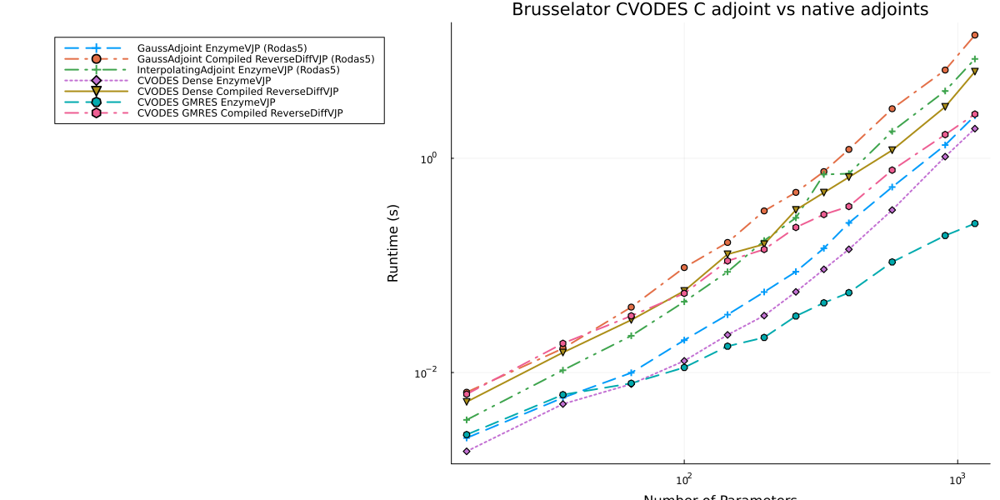
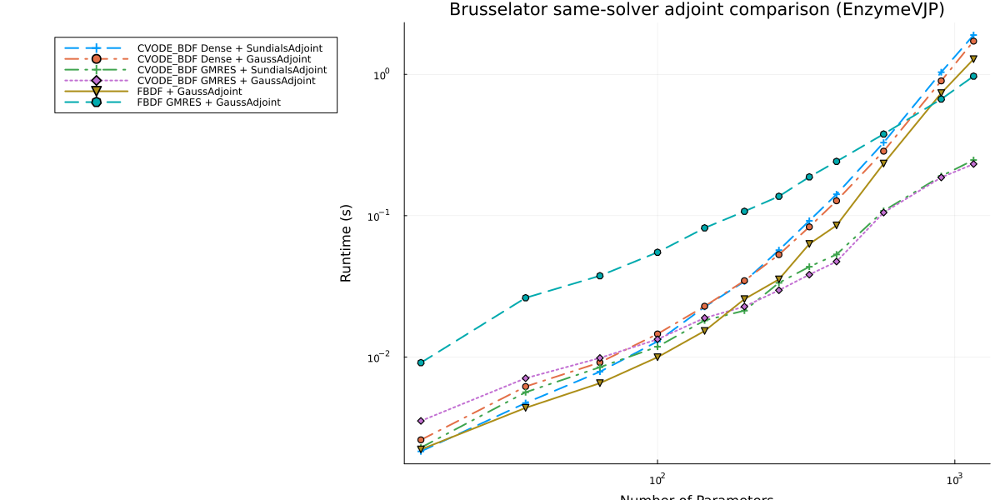
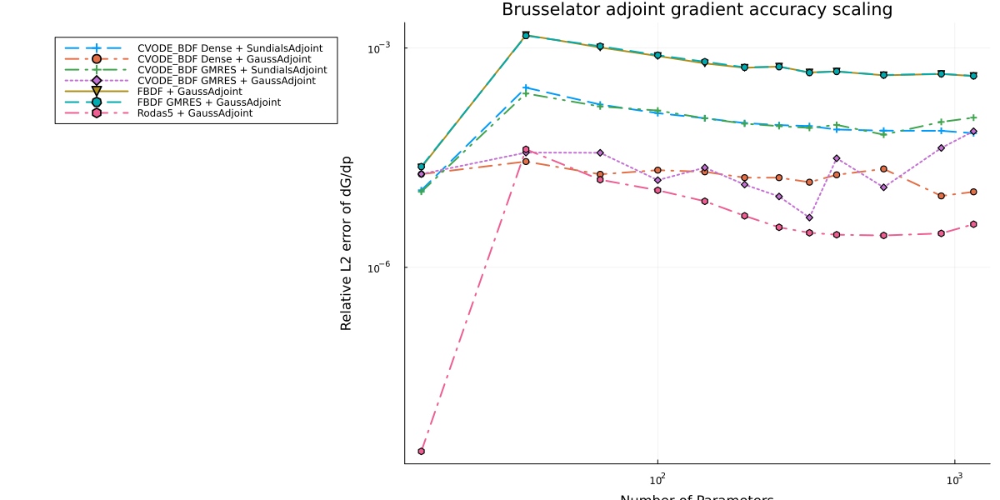
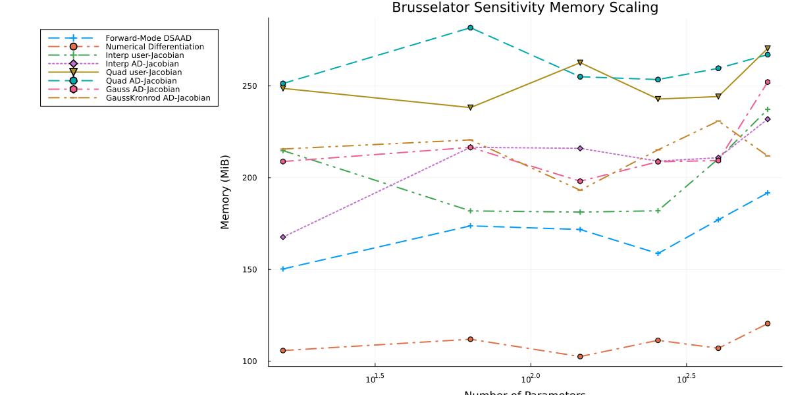

Bruss Scaling PDE Differentaition Benchmarks
From the paper A Comparison of Automatic Differentiation and Continuous Sensitivity Analysis for Derivatives of Differential Equation Solutions
using OrdinaryDiffEq, ReverseDiff, ForwardDiff, FiniteDiff, SciMLSensitivity
using OrdinaryDiffEqRosenbrock
using LinearAlgebra, Tracker, Mooncake, Plotsfunction makebrusselator(N = 8)
xyd_brusselator = range(0, stop = 1, length = N)
function limit(a, N)
if a == N+1
return 1
elseif a == 0
return N
else
return a
end
end
brusselator_f(x, y, t) = ifelse(
(((x-0.3)^2 + (y-0.6)^2) <= 0.1^2) &&
(t >= 1.1), 5.0, 0.0)
brusselator_2d_loop = let N=N, xyd=xyd_brusselator, dx=step(xyd_brusselator)
function brusselator_2d_loop(du, u, p, t)
@inbounds begin
ii1 = N^2
ii2 = ii1+N^2
ii3 = ii2+2(N^2)
A = @view p[1:ii1]
B = @view p[(ii1 + 1):ii2]
α = @view p[(ii2 + 1):ii3]
II = LinearIndices((N, N, 2))
for I in CartesianIndices((N, N))
x = xyd[I[1]]
y = xyd[I[2]]
i = I[1]
j = I[2]
ip1 = limit(i+1, N);
im1 = limit(i-1, N)
jp1 = limit(j+1, N);
jm1 = limit(j-1, N)
du[II[i, j, 1]] = α[II[
i, j, 1]]*(u[II[im1, j, 1]] + u[II[ip1, j, 1]] +
u[II[i, jp1, 1]] + u[II[i, jm1, 1]] -
4u[II[i, j, 1]])/dx^2 +
B[II[i, j, 1]] + u[II[i, j, 1]]^2*u[II[i, j, 2]] -
(A[II[i, j, 1]] + 1)*u[II[i, j, 1]] +
brusselator_f(x, y, t)
end
for I in CartesianIndices((N, N))
i = I[1]
j = I[2]
ip1 = limit(i+1, N)
im1 = limit(i-1, N)
jp1 = limit(j+1, N)
jm1 = limit(j-1, N)
du[II[i, j, 2]] = α[II[
i, j, 2]]*(u[II[im1, j, 2]] + u[II[ip1, j, 2]] + u[II[i, jp1, 2]] +
u[II[i, jm1, 2]] - 4u[II[i, j, 2]])/dx^2 +
A[II[i, j, 1]]*u[II[i, j, 1]] -
u[II[i, j, 1]]^2*u[II[i, j, 2]]
end
return nothing
end
end
end
function init_brusselator_2d(xyd)
N = length(xyd)
u = zeros(N, N, 2)
for I in CartesianIndices((N, N))
x = xyd[I[1]]
y = xyd[I[2]]
u[I, 1] = 22*(y*(1-y))^(3/2)
u[I, 2] = 27*(x*(1-x))^(3/2)
end
vec(u)
end
dx = step(xyd_brusselator)
e1 = ones(N-1)
off = N-1
e4 = ones(N-off)
T = diagm(0=>-2ones(N), -1=>e1, 1=>e1, off=>e4, -off=>e4) ./ dx^2
Ie = Matrix{Float64}(I, N, N)
# A + df/du
Op = kron(Ie, T) + kron(T, Ie)
brusselator_jac = let N=N
(J, a, p, t) -> begin
ii1 = N^2
ii2 = ii1+N^2
ii3 = ii2+2(N^2)
A = @view p[1:ii1]
B = @view p[(ii1 + 1):ii2]
α = @view p[(ii2 + 1):ii3]
u = @view a[1:(end ÷ 2)]
v = @view a[(end ÷ 2 + 1):end]
N2 = length(a)÷2
α1 = @view α[1:(end ÷ 2)]
α2 = @view α[(end ÷ 2 + 1):end]
fill!(J, 0)
J[1:N2, 1:N2] .= α1 .* Op
J[(N2 + 1):end, (N2 + 1):end] .= α2 .* Op
J1 = @view J[1:N2, 1:N2]
J2 = @view J[(N2 + 1):end, 1:N2]
J3 = @view J[1:N2, (N2 + 1):end]
J4 = @view J[(N2 + 1):end, (N2 + 1):end]
J1[diagind(J1)] .+= @. 2u*v-(A+1)
J2[diagind(J2)] .= @. A-2u*v
J3[diagind(J3)] .= @. u^2
J4[diagind(J4)] .+= @. -u^2
nothing
end
end
Jmat = zeros(2N*N, 2N*N)
dp = zeros(2N*N, 4N*N)
brusselator_comp = let N=N, xyd=xyd_brusselator, dx=step(xyd_brusselator), Jmat=Jmat,
dp=dp, brusselator_jac=brusselator_jac
function brusselator_comp(dus, us, p, t)
@inbounds begin
ii1 = N^2
ii2 = ii1+N^2
ii3 = ii2+2(N^2)
@views u, s = us[1:ii2], us[(ii2 + 1):end]
du = @view dus[1:ii2]
ds = @view dus[(ii2 + 1):end]
fill!(dp, 0)
A = @view p[1:ii1]
B = @view p[(ii1 + 1):ii2]
α = @view p[(ii2 + 1):ii3]
dfdα = @view dp[:, (ii2 + 1):ii3]
diagind(dfdα)
for i in 1:ii1
dp[i, ii1 + i] = 1
end
II = LinearIndices((N, N, 2))
uu = @view u[1:(end ÷ 2)]
for i in eachindex(uu)
dp[i, i] = -uu[i]
dp[i + ii1, i] = uu[i]
end
for I in CartesianIndices((N, N))
x = xyd[I[1]]
y = xyd[I[2]]
i = I[1]
j = I[2]
ip1 = limit(i+1, N);
im1 = limit(i-1, N)
jp1 = limit(j+1, N);
jm1 = limit(j-1, N)
au = dfdα[II[i, j, 1], II[i, j, 1]] = (u[II[im1, j, 1]] +
u[II[ip1, j, 1]] +
u[II[i, jp1, 1]] +
u[II[i, jm1, 1]] -
4u[II[i, j, 1]])/dx^2
du[II[i, j, 1]] = α[II[i, j, 1]]*(au) + B[II[i, j, 1]] +
u[II[i, j, 1]]^2*u[II[i, j, 2]] -
(A[II[i, j, 1]] + 1)*u[II[i, j, 1]] +
brusselator_f(x, y, t)
end
for I in CartesianIndices((N, N))
i = I[1]
j = I[2]
ip1 = limit(i+1, N)
im1 = limit(i-1, N)
jp1 = limit(j+1, N)
jm1 = limit(j-1, N)
av = dfdα[II[i, j, 2], II[i, j, 2]] = (u[II[im1, j, 2]] +
u[II[ip1, j, 2]] +
u[II[i, jp1, 2]] +
u[II[i, jm1, 2]] -
4u[II[i, j, 2]])/dx^2
du[II[i, j, 2]] = α[II[i, j, 2]]*(av) + A[II[i, j, 1]]*u[II[i, j, 1]] -
u[II[i, j, 1]]^2*u[II[i, j, 2]]
end
brusselator_jac(Jmat, u, p, t)
BLAS.gemm!('N', 'N', 1.0, Jmat, reshape(s, 2N*N, 4N*N), 1.0, dp)
copyto!(ds, vec(dp))
return nothing
end
end
end
u0 = init_brusselator_2d(xyd_brusselator)
p = [fill(3.4, N^2); fill(1.0, N^2); fill(10.0, 2*N^2)]
brusselator_2d_loop, u0,
p,
brusselator_jac,
ODEProblem(brusselator_comp, copy([u0; zeros((N^2*2)*(N^2*4))]), (0.0, 10.0), p)
end
Base.eps(::Type{Tracker.TrackedReal{T}}) where {T} = eps(T)
Base.vec(v::Adjoint{<:Real, <:AbstractVector}) = vec(v') # bad bad hackSetup AutoDiff
bt = 0:0.1:1
tspan = (0.0, 1.0)
forwarddiffn = vcat(2:10, 12, 15)
reversediffn = 2:10
numdiffn = vcat(2:10, 12)
csan = vcat(2:10, 12, 15, 17)
#csaseedn = 2:10
tols = (abstol = 1e-5, reltol = 1e-7)
@isdefined(PROBS) || (const PROBS = Dict{Int, Any}())
makebrusselator!(dict, n) = get!(()->makebrusselator(n), dict, n)
_adjoint_methods_iq = ntuple(2) do ii
Alg = (InterpolatingAdjoint, QuadratureAdjoint)[ii]
(
user = Alg(autodiff = false, autojacvec = false), # user Jacobian
adjc = Alg(autodiff = true, autojacvec = false), # AD Jacobian
advj = Alg(autodiff = true, autojacvec = EnzymeVJP()) # AD vJ
)
end |> NamedTuple{(:interp, :quad)}
# GaussAdjoint/GaussKronrodAdjoint do not support user-provided Jacobians (autodiff=false)
_adjoint_methods_g = ntuple(2) do ii
Alg = (GaussAdjoint, GaussKronrodAdjoint)[ii]
(
adjc = Alg(autodiff = true, autojacvec = false), # AD Jacobian
advj = Alg(autodiff = true, autojacvec = EnzymeVJP()) # AD vJ
)
end |> NamedTuple{(:gauss, :gausskronrod)}
@isdefined(ADJOINT_METHODS_IQ) ||
(const ADJOINT_METHODS_IQ = mapreduce(collect, vcat, _adjoint_methods_iq))
@isdefined(ADJOINT_METHODS_G) ||
(const ADJOINT_METHODS_G = mapreduce(collect, vcat, _adjoint_methods_g))
function auto_sen_l2(
f, u0, tspan, p, t, alg = Tsit5(); diffalg = ReverseDiff.gradient, kwargs...)
test_f(p) = begin
prob = ODEProblem{true, SciMLBase.FullSpecialize}(f, convert.(eltype(p), u0), tspan, p)
sol = solve(prob, alg, saveat = t; kwargs...)
sum(sol.u) do x
sum(z->(1-z)^2/2, x)
end
end
diffalg(test_f, p)
end
@inline function diffeq_sen_l2(df, u0, tspan, p, t, alg = Tsit5();
abstol = 1e-5, reltol = 1e-7, iabstol = abstol, ireltol = reltol,
sensalg = SensitivityAlg(), kwargs...)
prob = ODEProblem{true, SciMLBase.FullSpecialize}(df, u0, tspan, p)
saveat = tspan[1] != t[1] && tspan[end] != t[end] ? vcat(tspan[1], t, tspan[end]) : t
sol = solve(prob, alg, abstol = abstol, reltol = reltol, saveat = saveat; kwargs...)
dg(out, u, p, t, i) = (out.=u .- 1.0)
adjoint_sensitivities(sol, alg; t, abstol = abstol, dgdu_discrete = dg,
reltol = reltol, sensealg = sensalg)
enddiffeq_sen_l2 (generic function with 2 methods)AD Choice Benchmarks
forwarddiff = map(forwarddiffn) do n
bfun, b_u0, b_p, brusselator_jac, brusselator_comp = makebrusselator!(PROBS, n)
@elapsed auto_sen_l2(
bfun, b_u0, tspan, b_p, bt, (Rodas5()); diffalg = (ForwardDiff.gradient), tols...)
t = @elapsed auto_sen_l2(
bfun, b_u0, tspan, b_p, bt, (Rodas5()); diffalg = (ForwardDiff.gradient), tols...)
@show n, t
t
end(n, t) = (2, 0.000855941)
(n, t) = (3, 0.007478834)
(n, t) = (4, 0.029515121)
(n, t) = (5, 0.219867336)
(n, t) = (6, 0.46360374)
(n, t) = (7, 0.710202076)
(n, t) = (8, 1.521734707)
(n, t) = (9, 3.030618803)
(n, t) = (10, 8.106354476)
(n, t) = (12, 26.985692959)
(n, t) = (15, 100.163827379)
11-element Vector{Float64}:
0.000855941
0.007478834
0.029515121
0.219867336
0.46360374
0.710202076
1.521734707
3.030618803
8.106354476
26.985692959
100.163827379#=
reversediff = map(reversediffn) do n
bfun, b_u0, b_p, brusselator_jac, brusselator_comp = makebrusselator!(PROBS, n)
@elapsed auto_sen_l2(bfun, b_u0, tspan, b_p, bt, (Rodas5(autodiff=AutoFiniteDiff())); diffalg=(ReverseDiff.gradient), tols...)
t = @elapsed auto_sen_l2(bfun, b_u0, tspan, b_p, bt, (Rodas5(autodiff=AutoFiniteDiff())); diffalg=(ReverseDiff.gradient), tols...)
@show n,t
t
end
=#numdiff = map(numdiffn) do n
bfun, b_u0, b_p, brusselator_jac, brusselator_comp = makebrusselator!(PROBS, n)
@elapsed auto_sen_l2(bfun, b_u0, tspan, b_p, bt, (Rodas5());
diffalg = (FiniteDiff.finite_difference_gradient), tols...)
t = @elapsed auto_sen_l2(bfun, b_u0, tspan, b_p, bt, (Rodas5());
diffalg = (FiniteDiff.finite_difference_gradient), tols...)
@show n, t
t
end(n, t) = (2, 0.002892071)
(n, t) = (3, 0.021583651)
(n, t) = (4, 0.074257489)
(n, t) = (5, 0.239773853)
(n, t) = (6, 0.629463915)
(n, t) = (7, 1.662346011)
(n, t) = (8, 3.333508512)
(n, t) = (9, 7.632075433)
(n, t) = (10, 13.713935396)
(n, t) = (12, 87.735620013)
10-element Vector{Float64}:
0.002892071
0.021583651
0.074257489
0.239773853
0.629463915
1.662346011
3.333508512
7.632075433
13.713935396
87.735620013Warmup: run each adjoint method once at the smallest size to ensure all compilation is complete before we start timing.
let n = first(csan)
bfun, b_u0, b_p, brusselator_jac, brusselator_comp = makebrusselator!(PROBS, n)
solver = Rodas5(autodiff = AutoFiniteDiff())
for alg in ADJOINT_METHODS_IQ
f = SciMLSensitivity.alg_autodiff(alg) ? bfun :
ODEFunction(bfun, jac = brusselator_jac)
diffeq_sen_l2(f, b_u0, tspan, b_p, bt, solver; sensalg = alg, tols...)
end
for alg in ADJOINT_METHODS_G
diffeq_sen_l2(bfun, b_u0, tspan, b_p, bt, solver; sensalg = alg, tols...)
end
endcsa_iq = map(csan) do n
bfun, b_u0, b_p, brusselator_jac, brusselator_comp = makebrusselator!(PROBS, n)
@time ts = map(ADJOINT_METHODS_IQ) do alg
@info "Running $alg"
f = SciMLSensitivity.alg_autodiff(alg) ? bfun :
ODEFunction(bfun, jac = brusselator_jac)
solver = Rodas5(autodiff = AutoFiniteDiff())
@time diffeq_sen_l2(f, b_u0, tspan, b_p, bt, solver; sensalg = alg, tols...)
t = @elapsed diffeq_sen_l2(f, b_u0, tspan, b_p, bt, solver; sensalg = alg, tols...)
return t
end
@show n, ts
ts
end0.004762 seconds (9.62 k allocations: 1.118 MiB)
0.003256 seconds (7.41 k allocations: 2.494 MiB)
0.003960 seconds (7.84 k allocations: 603.445 KiB)
0.001662 seconds (4.59 k allocations: 304.711 KiB)
0.001324 seconds (2.31 k allocations: 231.992 KiB)
0.002798 seconds (8.01 k allocations: 511.156 KiB)
0.775363 seconds (1.21 M allocations: 70.534 MiB, 93.51% compilation time
: 6% of which was recompilation)
(n, ts) = (2, [0.00482484, 0.00285069, 0.00387623, 0.001344026, 0.00096569,
0.002731011])
0.019745 seconds (14.75 k allocations: 2.061 MiB)
7.674434 seconds (8.38 M allocations: 403.426 MiB, 1.16% gc time, 99.86%
compilation time)
0.009310 seconds (11.12 k allocations: 1010.422 KiB)
0.003109 seconds (5.61 k allocations: 551.508 KiB)
7.958237 seconds (7.10 M allocations: 339.909 MiB, 1.87% gc time, 99.94%
compilation time)
0.005124 seconds (9.21 k allocations: 706.938 KiB)
15.728832 seconds (15.57 M allocations: 753.901 MiB, 1.51% gc time, 99.29%
compilation time)
(n, ts) = (3, [0.019594937, 0.00966435, 0.009143775, 0.003004049, 0.0030696
79, 0.00486643])
0.081467 seconds (22.88 k allocations: 4.007 MiB)
7.701582 seconds (8.38 M allocations: 404.202 MiB, 2.86% gc time, 99.47%
compilation time)
0.019323 seconds (16.93 k allocations: 1.779 MiB)
0.006904 seconds (7.45 k allocations: 1.058 MiB)
7.856095 seconds (7.10 M allocations: 340.182 MiB, 0.59% gc time, 99.87%
compilation time)
0.008991 seconds (11.50 k allocations: 1018.531 KiB)
15.845996 seconds (15.62 M allocations: 762.986 MiB, 1.69% gc time, 97.86%
compilation time)
(n, ts) = (4, [0.08110013, 0.038496692, 0.0193148, 0.00678653, 0.00864135,
0.00875719])
0.272900 seconds (32.73 k allocations: 6.985 MiB)
7.434639 seconds (7.40 M allocations: 358.114 MiB, 1.37% gc time, 98.39%
compilation time)
0.038267 seconds (23.96 k allocations: 3.044 MiB)
0.015592 seconds (9.87 k allocations: 1.940 MiB)
7.877513 seconds (7.09 M allocations: 340.205 MiB, 0.71% gc time, 99.67%
compilation time)
0.016882 seconds (14.52 k allocations: 1.460 MiB)
16.150360 seconds (14.68 M allocations: 729.655 MiB, 0.98% gc time, 93.91%
compilation time)
(n, ts) = (5, [0.272040874, 0.117671092, 0.039090005, 0.015388701, 0.023901
082, 0.017109983])
0.750892 seconds (44.79 k allocations: 12.113 MiB)
7.506760 seconds (7.42 M allocations: 360.698 MiB, 0.59% gc time, 96.01%
compilation time)
0.072130 seconds (32.58 k allocations: 5.039 MiB)
0.069577 seconds (12.61 k allocations: 3.542 MiB, 57.32% gc time)
7.875713 seconds (7.09 M allocations: 340.936 MiB, 0.56% gc time, 99.17%
compilation time)
0.028588 seconds (17.93 k allocations: 2.018 MiB)
17.601741 seconds (14.75 M allocations: 754.300 MiB, 0.99% gc time, 85.32%
compilation time)
(n, ts) = (6, [0.795344358, 0.29764296, 0.07247919, 0.029556154, 0.06296780
8, 0.028620984])
1.976698 seconds (61.31 k allocations: 19.872 MiB, 2.32% gc time)
7.876652 seconds (6.34 M allocations: 311.890 MiB, 1.44% gc time, 88.60%
compilation time)
0.152729 seconds (44.40 k allocations: 8.014 MiB)
0.055779 seconds (15.83 k allocations: 5.743 MiB)
1.726452 seconds (754.21 k allocations: 39.441 MiB, 3.08% gc time, 88.50%
compilation time)
0.044806 seconds (21.96 k allocations: 2.710 MiB)
15.055776 seconds (7.41 M allocations: 435.088 MiB, 1.41% gc time, 56.50%
compilation time)
(n, ts) = (7, [1.922663233, 0.887245789, 0.154566691, 0.055864941, 0.145526
204, 0.044550179])
4.136518 seconds (78.34 k allocations: 30.027 MiB)
1.682543 seconds (24.29 k allocations: 11.870 MiB)
0.245688 seconds (56.56 k allocations: 12.158 MiB)
0.095069 seconds (20.62 k allocations: 9.057 MiB)
0.318507 seconds (7.29 k allocations: 4.431 MiB)
0.067482 seconds (27.82 k allocations: 3.655 MiB)
13.426910 seconds (431.95 k allocations: 143.262 MiB, 2.34% gc time)
(n, ts) = (8, [4.240612619, 1.688640206, 0.248239152, 0.306384119, 0.317322
676, 0.06766981])
8.587448 seconds (101.10 k allocations: 45.376 MiB)
3.890280 seconds (33.77 k allocations: 18.403 MiB)
0.463790 seconds (72.81 k allocations: 18.081 MiB, 9.24% gc time)
0.165251 seconds (24.98 k allocations: 13.637 MiB)
0.628145 seconds (8.38 k allocations: 6.510 MiB)
0.108540 seconds (33.27 k allocations: 4.814 MiB)
27.735309 seconds (550.72 k allocations: 214.507 MiB, 0.46% gc time)
(n, ts) = (9, [8.637791094, 3.887435137, 0.414422872, 0.202772382, 0.627621
386, 0.108696576])
15.971005 seconds (123.40 k allocations: 67.523 MiB, 0.46% gc time)
6.704518 seconds (37.17 k allocations: 26.865 MiB, 0.51% gc time)
0.814111 seconds (88.75 k allocations: 25.713 MiB, 10.46% gc time)
0.264392 seconds (29.84 k allocations: 20.844 MiB)
1.142273 seconds (9.60 k allocations: 9.237 MiB)
0.153960 seconds (39.34 k allocations: 6.180 MiB)
50.061049 seconds (658.31 k allocations: 313.590 MiB, 0.62% gc time)
(n, ts) = (10, [15.960729325, 6.672595752, 0.763416963, 0.300945907, 1.1470
56234, 0.153284574])
48.989331 seconds (181.93 k allocations: 130.739 MiB, 0.33% gc time)
21.880764 seconds (54.44 k allocations: 53.367 MiB, 0.26% gc time)
1.628146 seconds (130.82 k allocations: 48.827 MiB, 1.29% gc time)
0.769069 seconds (41.40 k allocations: 40.377 MiB, 10.92% gc time)
3.333468 seconds (12.71 k allocations: 17.477 MiB)
0.356759 seconds (53.73 k allocations: 9.914 MiB)
153.605967 seconds (952.18 k allocations: 602.268 MiB, 0.55% gc time)
(n, ts) = (12, [48.403238459, 21.976154972, 1.697642938, 0.838799807, 3.359
240469, 0.359025798])
172.811688 seconds (271.11 k allocations: 298.678 MiB, 0.13% gc time)
85.302858 seconds (85.38 k allocations: 125.671 MiB, 0.08% gc time)
3.874097 seconds (208.12 k allocations: 110.003 MiB, 6.91% gc time)
2.394922 seconds (62.15 k allocations: 96.893 MiB, 11.61% gc time)
12.599516 seconds (17.89 k allocations: 39.461 MiB, 0.12% gc time)
0.813798 seconds (79.65 k allocations: 18.660 MiB)
555.752539 seconds (1.45 M allocations: 1.347 GiB, 0.29% gc time)
(n, ts) = (15, [173.285936826, 85.40806671, 3.661743243, 2.147097202, 12.59
32905, 0.84406669])
446.431490 seconds (460.10 k allocations: 470.399 MiB, 0.17% gc time)
559.090773 seconds (101.45 k allocations: 203.898 MiB, 0.03% gc time)
6.181718 seconds (248.29 k allocations: 173.948 MiB, 4.03% gc time)
4.365082 seconds (116.41 k allocations: 149.927 MiB, 2.37% gc time)
27.676553 seconds (21.99 k allocations: 63.040 MiB, 0.04% gc time)
1.490735 seconds (100.13 k allocations: 27.246 MiB)
2098.211994 seconds (2.10 M allocations: 2.127 GiB, 0.14% gc time)
(n, ts) = (17, [452.763670151, 560.364514396, 6.218621109, 4.428579457, 27.
606190509, 1.579564423])
12-element Vector{Vector{Float64}}:
[0.00482484, 0.00285069, 0.00387623, 0.001344026, 0.00096569, 0.002731011]
[0.019594937, 0.00966435, 0.009143775, 0.003004049, 0.003069679, 0.0048664
3]
[0.08110013, 0.038496692, 0.0193148, 0.00678653, 0.00864135, 0.00875719]
[0.272040874, 0.117671092, 0.039090005, 0.015388701, 0.023901082, 0.017109
983]
[0.795344358, 0.29764296, 0.07247919, 0.029556154, 0.062967808, 0.02862098
4]
[1.922663233, 0.887245789, 0.154566691, 0.055864941, 0.145526204, 0.044550
179]
[4.240612619, 1.688640206, 0.248239152, 0.306384119, 0.317322676, 0.067669
81]
[8.637791094, 3.887435137, 0.414422872, 0.202772382, 0.627621386, 0.108696
576]
[15.960729325, 6.672595752, 0.763416963, 0.300945907, 1.147056234, 0.15328
4574]
[48.403238459, 21.976154972, 1.697642938, 0.838799807, 3.359240469, 0.3590
25798]
[173.285936826, 85.40806671, 3.661743243, 2.147097202, 12.5932905, 0.84406
669]
[452.763670151, 560.364514396, 6.218621109, 4.428579457, 27.606190509, 1.5
79564423]csa_g = map(csan) do n
bfun, b_u0, b_p, brusselator_jac, brusselator_comp = makebrusselator!(PROBS, n)
@time ts = map(ADJOINT_METHODS_G) do alg
@info "Running $alg"
solver = Rodas5(autodiff = AutoFiniteDiff())
@time diffeq_sen_l2(bfun, b_u0, tspan, b_p, bt, solver; sensalg = alg, tols...)
t = @elapsed diffeq_sen_l2(bfun, b_u0, tspan, b_p, bt, solver; sensalg = alg, tols...)
return t
end
@show n, ts
ts
end0.001401 seconds (2.65 k allocations: 296.195 KiB)
0.002714 seconds (6.37 k allocations: 502.938 KiB)
0.001594 seconds (4.86 k allocations: 345.648 KiB)
0.003277 seconds (9.12 k allocations: 589.516 KiB)
0.370413 seconds (447.17 k allocations: 24.671 MiB, 93.45% compilation ti
me)
(n, ts) = (2, [0.00100284, 0.002362355, 0.001184278, 0.002864851])
7.238249 seconds (7.81 M allocations: 387.606 MiB, 3.66% gc time, 99.92%
compilation time)
0.005199 seconds (7.39 k allocations: 699.938 KiB)
7.221275 seconds (8.03 M allocations: 398.148 MiB, 1.48% gc time, 99.90%
compilation time)
0.006831 seconds (13.43 k allocations: 927.844 KiB)
14.499018 seconds (15.90 M allocations: 790.643 MiB, 2.56% gc time, 99.64%
compilation time)
(n, ts) = (3, [0.003628423, 0.005302536, 0.004240146, 0.007005419])
7.168305 seconds (7.81 M allocations: 388.534 MiB, 1.47% gc time, 99.85%
compilation time)
0.008808 seconds (9.46 k allocations: 1.089 MiB)
7.288016 seconds (8.03 M allocations: 398.630 MiB, 1.54% gc time, 99.79%
compilation time)
0.011129 seconds (18.30 k allocations: 1.449 MiB)
14.523114 seconds (15.92 M allocations: 794.852 MiB, 1.50% gc time, 99.36%
compilation time)
(n, ts) = (4, [0.008558323, 0.008742591, 0.012404493, 0.010875699])
6.614815 seconds (6.13 M allocations: 295.080 MiB, 0.84% gc time, 99.64%
compilation time)
0.016695 seconds (11.94 k allocations: 1.772 MiB)
6.804771 seconds (6.50 M allocations: 313.023 MiB, 2.05% gc time, 99.52%
compilation time)
0.019752 seconds (20.78 k allocations: 2.185 MiB)
13.551134 seconds (12.71 M allocations: 620.054 MiB, 1.44% gc time, 98.61%
compilation time)
(n, ts) = (5, [0.021861407, 0.016592251, 0.03039762, 0.020434661])
6.821464 seconds (6.13 M allocations: 296.241 MiB, 3.03% gc time, 98.26%
compilation time)
0.028581 seconds (14.95 k allocations: 2.880 MiB)
6.825401 seconds (6.50 M allocations: 314.488 MiB, 1.40% gc time, 98.76%
compilation time)
0.033832 seconds (27.09 k allocations: 3.515 MiB)
13.977435 seconds (12.74 M allocations: 630.422 MiB, 2.16% gc time, 96.18%
compilation time)
(n, ts) = (6, [0.117121893, 0.028233422, 0.083003072, 0.033102462])
6.577527 seconds (5.94 M allocations: 288.969 MiB, 1.56% gc time, 97.23%
compilation time)
0.046217 seconds (18.42 k allocations: 4.478 MiB)
6.752278 seconds (6.32 M allocations: 307.412 MiB, 0.65% gc time, 97.30%
compilation time)
0.053214 seconds (32.12 k allocations: 5.278 MiB)
13.896762 seconds (12.39 M allocations: 626.691 MiB, 1.42% gc time, 93.30%
compilation time)
(n, ts) = (7, [0.129735514, 0.046386966, 0.23106695, 0.053086528])
0.602490 seconds (6.71 k allocations: 7.881 MiB)
0.069651 seconds (22.49 k allocations: 6.825 MiB)
0.448125 seconds (19.15 k allocations: 8.661 MiB, 13.88% gc time)
0.079902 seconds (40.16 k allocations: 7.961 MiB)
2.348563 seconds (178.35 k allocations: 63.235 MiB, 2.65% gc time)
(n, ts) = (8, [0.604215688, 0.069914206, 0.386596731, 0.079386269])
1.208210 seconds (7.62 k allocations: 12.178 MiB)
0.114376 seconds (27.08 k allocations: 10.157 MiB)
0.751500 seconds (22.04 k allocations: 13.255 MiB)
0.127236 seconds (47.31 k allocations: 11.634 MiB)
4.488354 seconds (209.45 k allocations: 95.024 MiB, 1.72% gc time)
(n, ts) = (9, [1.24816137, 0.11359794, 0.789205088, 0.126982983])
2.506398 seconds (9.30 k allocations: 17.992 MiB, 1.37% gc time)
0.209312 seconds (34.36 k allocations: 14.665 MiB, 17.86% gc time)
1.417772 seconds (24.49 k allocations: 19.315 MiB)
0.184530 seconds (55.15 k allocations: 16.370 MiB)
8.647609 seconds (247.96 k allocations: 137.263 MiB, 1.72% gc time)
(n, ts) = (10, [2.469575683, 0.170065513, 1.457571461, 0.223007142])
6.863103 seconds (12.15 k allocations: 35.855 MiB, 0.38% gc time)
0.451072 seconds (46.42 k allocations: 27.877 MiB, 9.30% gc time)
4.004026 seconds (30.58 k allocations: 37.996 MiB, 2.11% gc time)
0.426405 seconds (73.04 k allocations: 30.617 MiB)
23.693736 seconds (325.76 k allocations: 265.269 MiB, 1.80% gc time)
(n, ts) = (12, [6.836065879, 0.468620493, 4.119659977, 0.514809081])
38.510132 seconds (23.19 k allocations: 85.149 MiB, 0.21% gc time)
1.164666 seconds (71.45 k allocations: 63.607 MiB, 7.23% gc time)
19.283190 seconds (45.13 k allocations: 88.944 MiB, 0.14% gc time)
1.211068 seconds (103.67 k allocations: 68.193 MiB, 7.41% gc time)
120.537915 seconds (488.26 k allocations: 612.365 MiB, 0.69% gc time)
(n, ts) = (15, [38.508190791, 1.262028839, 19.298073772, 1.290419419])
53.092030 seconds (19.72 k allocations: 138.219 MiB, 0.23% gc time)
2.126601 seconds (98.91 k allocations: 102.479 MiB, 10.72% gc time)
46.179468 seconds (42.46 k allocations: 143.069 MiB, 0.35% gc time)
2.137321 seconds (133.35 k allocations: 108.457 MiB, 4.33% gc time)
206.976513 seconds (590.22 k allocations: 985.032 MiB, 0.60% gc time)
(n, ts) = (17, [53.231569283, 2.240438107, 45.638120749, 2.321057995])
12-element Vector{Vector{Float64}}:
[0.00100284, 0.002362355, 0.001184278, 0.002864851]
[0.003628423, 0.005302536, 0.004240146, 0.007005419]
[0.008558323, 0.008742591, 0.012404493, 0.010875699]
[0.021861407, 0.016592251, 0.03039762, 0.020434661]
[0.117121893, 0.028233422, 0.083003072, 0.033102462]
[0.129735514, 0.046386966, 0.23106695, 0.053086528]
[0.604215688, 0.069914206, 0.386596731, 0.079386269]
[1.24816137, 0.11359794, 0.789205088, 0.126982983]
[2.469575683, 0.170065513, 1.457571461, 0.223007142]
[6.836065879, 0.468620493, 4.119659977, 0.514809081]
[38.508190791, 1.262028839, 19.298073772, 1.290419419]
[53.231569283, 2.240438107, 45.638120749, 2.321057995]n_to_param(n) = 4n^2
lw = 2
ms = 0.5
plt1 = plot(title = "Sensitivity Scaling on Brusselator");
plot!(plt1, n_to_param.(forwarddiffn), forwarddiff, lab = "Forward-Mode DSAAD",
lw = lw, marksize = ms, linestyle = :auto, marker = :auto);
#plot!(plt1, n_to_param.(reversediffn), reversediff, lab="Reverse-Mode DSAAD", lw=lw, marksize=ms, linestyle=:auto, marker=:auto);
csadata_iq = [[csa_iq[j][i] for j in eachindex(csa_iq)] for i in eachindex(csa_iq[1])]
csadata_g = [[csa_g[j][i] for j in eachindex(csa_g)] for i in eachindex(csa_g[1])]
plot!(plt1, n_to_param.(csan), csadata_iq[1], lab = "Interpolating CASA user-Jacobian",
lw = lw, marksize = ms, linestyle = :auto, marker = :auto);
plot!(plt1, n_to_param.(csan), csadata_iq[2], lab = "Interpolating CASA AD-Jacobian",
lw = lw, marksize = ms, linestyle = :auto, marker = :auto);
plot!(
plt1, n_to_param.(csan), csadata_iq[3], lab = raw"Interpolating CASA AD-$v^{T}J$ seeding",
lw = lw, marksize = ms, linestyle = :auto, marker = :auto);
plot!(plt1, n_to_param.(csan), csadata_iq[1 + 3], lab = "Quadrature CASA user-Jacobian",
lw = lw, marksize = ms, linestyle = :auto, marker = :auto);
plot!(plt1, n_to_param.(csan), csadata_iq[2 + 3], lab = "Quadrature CASA AD-Jacobian",
lw = lw, marksize = ms, linestyle = :auto, marker = :auto);
plot!(
plt1, n_to_param.(csan), csadata_iq[3 + 3], lab = raw"Quadrature CASA AD-$v^{T}J$ seeding",
lw = lw, marksize = ms, linestyle = :auto, marker = :auto);
plot!(plt1, n_to_param.(csan), csadata_g[1], lab = "Gauss CASA AD-Jacobian",
lw = lw, marksize = ms, linestyle = :auto, marker = :auto);
plot!(
plt1, n_to_param.(csan), csadata_g[2], lab = raw"Gauss CASA AD-$v^{T}J$ seeding",
lw = lw, marksize = ms, linestyle = :auto, marker = :auto);
plot!(plt1, n_to_param.(csan), csadata_g[1 + 2], lab = "GaussKronrod CASA AD-Jacobian",
lw = lw, marksize = ms, linestyle = :auto, marker = :auto);
plot!(
plt1, n_to_param.(csan), csadata_g[2 + 2], lab = raw"GaussKronrod CASA AD-$v^{T}J$ seeding",
lw = lw, marksize = ms, linestyle = :auto, marker = :auto);
plot!(plt1, n_to_param.(numdiffn), numdiff, lab = "Numerical Differentiation",
lw = lw, marksize = ms, linestyle = :auto, marker = :auto);
xaxis!(plt1, "Number of Parameters", :log10);
yaxis!(plt1, "Runtime (s)", :log10);
plot!(plt1, legend = :outertopleft, size = (1200, 600))
VJP Choice Benchmarks
bt = 0:0.1:1
tspan = (0.0, 1.0)
csan = vcat(2:10, 12, 15, 17)
tols = (abstol = 1e-5, reltol = 1e-7)
_adjoint_methods = ntuple(4) do ii
Alg = (InterpolatingAdjoint, QuadratureAdjoint, GaussAdjoint, GaussKronrodAdjoint)[ii]
(
advj1 = Alg(autodiff = true, autojacvec = EnzymeVJP()), # AD vJ (Enzyme)
advj2 = Alg(autodiff = true, autojacvec = ReverseDiffVJP(false)), # AD vJ (ReverseDiff)
advj3 = Alg(autodiff = true, autojacvec = ReverseDiffVJP(true)), # AD vJ (Compiled ReverseDiff)
advj4 = Alg(autodiff = true, autojacvec = SciMLSensitivity.MooncakeVJP()) # AD vJ (Mooncake)
)
end |> NamedTuple{(:interp, :quad, :gauss, :gausskronrod)}
adjoint_methods = mapreduce(collect, vcat, _adjoint_methods)16-element Vector{SciMLBase.AbstractAdjointSensitivityAlgorithm{0, true, Va
l{:central}}}:
SciMLSensitivity.InterpolatingAdjoint{0, true, Val{:central}, SciMLSensiti
vity.EnzymeVJP{EnzymeCore.ReverseMode{false, false, false, EnzymeCore.FFIAB
I, false, false}}}(SciMLSensitivity.EnzymeVJP{EnzymeCore.ReverseMode{false,
false, false, EnzymeCore.FFIABI, false, false}}(0, EnzymeCore.ReverseMode{
false, false, false, EnzymeCore.FFIABI, false, false}()), false, false)
SciMLSensitivity.InterpolatingAdjoint{0, true, Val{:central}, SciMLSensiti
vity.ReverseDiffVJP{false}}(SciMLSensitivity.ReverseDiffVJP{false}(), false
, false)
SciMLSensitivity.InterpolatingAdjoint{0, true, Val{:central}, SciMLSensiti
vity.ReverseDiffVJP{true}}(SciMLSensitivity.ReverseDiffVJP{true}(), false,
false)
SciMLSensitivity.InterpolatingAdjoint{0, true, Val{:central}, SciMLSensiti
vity.MooncakeVJP}(SciMLSensitivity.MooncakeVJP(), false, false)
SciMLSensitivity.QuadratureAdjoint{0, true, Val{:central}, SciMLSensitivit
y.EnzymeVJP{EnzymeCore.ReverseMode{false, false, false, EnzymeCore.FFIABI,
false, false}}, Val{true}}(SciMLSensitivity.EnzymeVJP{EnzymeCore.ReverseMod
e{false, false, false, EnzymeCore.FFIABI, false, false}}(0, EnzymeCore.Reve
rseMode{false, false, false, EnzymeCore.FFIABI, false, false}()), 1.0e-6, 0
.001, Val{true}())
SciMLSensitivity.QuadratureAdjoint{0, true, Val{:central}, SciMLSensitivit
y.ReverseDiffVJP{false}, Val{true}}(SciMLSensitivity.ReverseDiffVJP{false}(
), 1.0e-6, 0.001, Val{true}())
SciMLSensitivity.QuadratureAdjoint{0, true, Val{:central}, SciMLSensitivit
y.ReverseDiffVJP{true}, Val{true}}(SciMLSensitivity.ReverseDiffVJP{true}(),
1.0e-6, 0.001, Val{true}())
SciMLSensitivity.QuadratureAdjoint{0, true, Val{:central}, SciMLSensitivit
y.MooncakeVJP, Val{true}}(SciMLSensitivity.MooncakeVJP(), 1.0e-6, 0.001, Va
l{true}())
SciMLSensitivity.GaussAdjoint{0, true, Val{:central}, SciMLSensitivity.Enz
ymeVJP{EnzymeCore.ReverseMode{false, false, false, EnzymeCore.FFIABI, false
, false}}, Val{true}}(SciMLSensitivity.EnzymeVJP{EnzymeCore.ReverseMode{fal
se, false, false, EnzymeCore.FFIABI, false, false}}(0, EnzymeCore.ReverseMo
de{false, false, false, EnzymeCore.FFIABI, false, false}()), false, Val{tru
e}())
SciMLSensitivity.GaussAdjoint{0, true, Val{:central}, SciMLSensitivity.Rev
erseDiffVJP{false}, Val{true}}(SciMLSensitivity.ReverseDiffVJP{false}(), fa
lse, Val{true}())
SciMLSensitivity.GaussAdjoint{0, true, Val{:central}, SciMLSensitivity.Rev
erseDiffVJP{true}, Val{true}}(SciMLSensitivity.ReverseDiffVJP{true}(), fals
e, Val{true}())
SciMLSensitivity.GaussAdjoint{0, true, Val{:central}, SciMLSensitivity.Moo
ncakeVJP, Val{true}}(SciMLSensitivity.MooncakeVJP(), false, Val{true}())
SciMLSensitivity.GaussKronrodAdjoint{0, true, Val{:central}, SciMLSensitiv
ity.EnzymeVJP{EnzymeCore.ReverseMode{false, false, false, EnzymeCore.FFIABI
, false, false}}}(SciMLSensitivity.EnzymeVJP{EnzymeCore.ReverseMode{false,
false, false, EnzymeCore.FFIABI, false, false}}(0, EnzymeCore.ReverseMode{f
alse, false, false, EnzymeCore.FFIABI, false, false}()), false)
SciMLSensitivity.GaussKronrodAdjoint{0, true, Val{:central}, SciMLSensitiv
ity.ReverseDiffVJP{false}}(SciMLSensitivity.ReverseDiffVJP{false}(), false)
SciMLSensitivity.GaussKronrodAdjoint{0, true, Val{:central}, SciMLSensitiv
ity.ReverseDiffVJP{true}}(SciMLSensitivity.ReverseDiffVJP{true}(), false)
SciMLSensitivity.GaussKronrodAdjoint{0, true, Val{:central}, SciMLSensitiv
ity.MooncakeVJP}(SciMLSensitivity.MooncakeVJP(), false)Warmup: compile all VJP backends before benchmarking.
let n = first(csan)
bfun, b_u0, b_p, brusselator_jac, brusselator_comp = makebrusselator!(PROBS, n)
solver = Rodas5(autodiff = AutoFiniteDiff())
for alg in adjoint_methods
f = SciMLSensitivity.alg_autodiff(alg) ? bfun :
ODEFunction(bfun, jac = brusselator_jac)
diffeq_sen_l2(f, b_u0, tspan, b_p, bt, solver; sensalg = alg, tols...)
end
endcsavjp = map(csan) do n
bfun, b_u0, b_p, brusselator_jac, brusselator_comp = makebrusselator!(PROBS, n)
@time ts = map(adjoint_methods) do alg
@info "Running $alg"
f = SciMLSensitivity.alg_autodiff(alg) ? bfun :
ODEFunction(bfun, jac = brusselator_jac)
solver = Rodas5(autodiff = AutoFiniteDiff())
@time diffeq_sen_l2(f, b_u0, tspan, b_p, bt, solver; sensalg = alg, tols...)
t = @elapsed diffeq_sen_l2(f, b_u0, tspan, b_p, bt, solver; sensalg = alg, tols...)
return t
end
@show n, ts
ts
end0.003781 seconds (7.84 k allocations: 603.445 KiB)
0.112750 seconds (567.70 k allocations: 23.804 MiB)
0.006821 seconds (3.74 k allocations: 302.867 KiB)
1.008087 seconds (2.89 M allocations: 127.649 MiB, 4.90% gc time, 59.69%
compilation time: <1% of which was recompilation)
0.002785 seconds (8.01 k allocations: 511.156 KiB)
0.073944 seconds (364.78 k allocations: 15.301 MiB)
0.005490 seconds (4.27 k allocations: 287.969 KiB)
0.002244 seconds (4.00 k allocations: 475.625 KiB)
0.003012 seconds (6.37 k allocations: 502.938 KiB)
0.050196 seconds (365.35 k allocations: 15.363 MiB)
0.005350 seconds (4.85 k allocations: 350.062 KiB)
0.002252 seconds (4.43 k allocations: 527.078 KiB)
0.003025 seconds (9.12 k allocations: 589.516 KiB)
0.059113 seconds (367.44 k allocations: 15.405 MiB)
0.006841 seconds (6.93 k allocations: 393.328 KiB)
0.002657 seconds (6.78 k allocations: 611.594 KiB)
2.925472 seconds (7.61 M allocations: 345.052 MiB, 3.71% gc time, 60.55%
compilation time: <1% of which was recompilation)
(n, ts) = (2, [0.003802581, 0.084896953, 0.006227816, 0.002388546, 0.002878
461, 0.066473851, 0.004801681, 0.001632584, 0.002816751, 0.10771938, 0.0047
11002, 0.001699512, 0.002769912, 0.06944711, 0.006215617, 0.002074858])
0.009389 seconds (11.12 k allocations: 1010.422 KiB)
0.372799 seconds (2.11 M allocations: 92.720 MiB, 15.16% gc time)
0.022327 seconds (5.20 k allocations: 568.695 KiB)
0.007111 seconds (6.21 k allocations: 1005.570 KiB)
0.005644 seconds (9.21 k allocations: 706.938 KiB)
0.260445 seconds (1.10 M allocations: 48.576 MiB, 24.99% gc time)
0.013734 seconds (7.06 k allocations: 537.391 KiB)
0.004293 seconds (4.47 k allocations: 672.859 KiB)
0.005641 seconds (7.39 k allocations: 699.938 KiB)
0.197677 seconds (1.04 M allocations: 45.634 MiB, 20.24% gc time)
0.012925 seconds (7.83 k allocations: 625.641 KiB)
0.004415 seconds (4.94 k allocations: 726.719 KiB)
0.007098 seconds (13.43 k allocations: 927.844 KiB)
0.194103 seconds (1.04 M allocations: 45.734 MiB, 19.30% gc time)
0.018892 seconds (11.95 k allocations: 727.547 KiB)
0.006013 seconds (9.83 k allocations: 948.625 KiB)
2.154079 seconds (10.78 M allocations: 485.525 MiB, 9.24% gc time)
(n, ts) = (3, [0.009361815, 0.322682635, 0.021956386, 0.007052058, 0.005439
594, 0.1645387, 0.013395413, 0.003974099, 0.005382245, 0.184512886, 0.01258
5051, 0.004205398, 0.007114967, 0.204428542, 0.018633759, 0.005631302])
0.018708 seconds (16.93 k allocations: 1.779 MiB)
0.999759 seconds (6.26 M allocations: 263.576 MiB, 7.90% gc time)
0.067348 seconds (7.19 k allocations: 1.062 MiB)
0.017561 seconds (8.58 k allocations: 1.781 MiB)
0.008674 seconds (11.50 k allocations: 1018.531 KiB)
0.480743 seconds (2.95 M allocations: 124.153 MiB, 7.53% gc time)
0.032758 seconds (11.00 k allocations: 875.219 KiB)
0.008614 seconds (5.46 k allocations: 1.005 MiB)
0.008809 seconds (9.46 k allocations: 1.089 MiB)
0.447740 seconds (2.72 M allocations: 114.619 MiB, 8.71% gc time)
0.030616 seconds (11.78 k allocations: 1.057 MiB)
0.008726 seconds (5.85 k allocations: 1.160 MiB)
0.011786 seconds (18.30 k allocations: 1.449 MiB)
0.496907 seconds (2.72 M allocations: 114.791 MiB, 7.87% gc time)
0.043361 seconds (17.71 k allocations: 1.230 MiB)
0.012253 seconds (12.94 k allocations: 1.511 MiB)
5.461901 seconds (29.58 M allocations: 1.237 GiB, 7.67% gc time)
(n, ts) = (4, [0.018737548, 1.052148886, 0.067403322, 0.017329293, 0.008891
989, 0.482349674, 0.032764916, 0.008467063, 0.00883126, 0.449351251, 0.0304
81298, 0.008697961, 0.011611811, 0.495245852, 0.043779543, 0.012297304])
0.038212 seconds (23.96 k allocations: 3.044 MiB)
2.387695 seconds (14.56 M allocations: 645.083 MiB, 9.72% gc time)
0.149555 seconds (9.73 k allocations: 1.999 MiB)
0.039247 seconds (11.40 k allocations: 3.026 MiB)
0.015923 seconds (14.52 k allocations: 1.460 MiB)
1.078647 seconds (6.65 M allocations: 294.556 MiB, 7.29% gc time)
0.071853 seconds (16.07 k allocations: 1.370 MiB)
0.017197 seconds (6.67 k allocations: 1.464 MiB)
0.016255 seconds (11.94 k allocations: 1.772 MiB)
0.975999 seconds (5.92 M allocations: 262.817 MiB, 11.55% gc time)
0.071906 seconds (16.86 k allocations: 1.825 MiB)
0.017131 seconds (6.85 k allocations: 1.837 MiB)
0.019318 seconds (20.78 k allocations: 2.185 MiB)
1.009022 seconds (5.93 M allocations: 263.042 MiB, 7.00% gc time)
0.090891 seconds (22.78 k allocations: 2.050 MiB)
0.021803 seconds (13.94 k allocations: 2.241 MiB)
12.211444 seconds (66.46 M allocations: 2.912 GiB, 8.72% gc time)
(n, ts) = (5, [0.038678485, 2.427221053, 0.14890947, 0.038982372, 0.0159616
57, 1.11135424, 0.071967855, 0.017029036, 0.016022666, 0.97242849, 0.073343
251, 0.017173645, 0.019273623, 1.089093348, 0.091201279, 0.02147201])
0.070297 seconds (32.58 k allocations: 5.039 MiB)
4.726299 seconds (29.36 M allocations: 1.230 GiB, 8.99% gc time)
0.304096 seconds (12.87 k allocations: 3.579 MiB)
0.077483 seconds (14.94 k allocations: 5.095 MiB)
0.027311 seconds (17.93 k allocations: 2.018 MiB)
2.036221 seconds (12.91 M allocations: 553.516 MiB, 9.25% gc time)
0.136328 seconds (22.26 k allocations: 1.980 MiB)
0.031256 seconds (8.18 k allocations: 2.212 MiB)
0.028149 seconds (14.95 k allocations: 2.880 MiB)
1.932710 seconds (11.43 M allocations: 491.217 MiB, 17.54% gc time)
0.123010 seconds (23.08 k allocations: 3.013 MiB)
0.031454 seconds (8.22 k allocations: 3.137 MiB)
0.032856 seconds (27.09 k allocations: 3.515 MiB)
1.989161 seconds (11.44 M allocations: 491.594 MiB, 8.62% gc time)
0.185948 seconds (31.24 k allocations: 3.389 MiB)
0.040509 seconds (18.05 k allocations: 3.769 MiB)
23.585191 seconds (130.72 M allocations: 5.541 GiB, 8.97% gc time)
(n, ts) = (6, [0.070201713, 4.732354174, 0.30163784, 0.077259271, 0.0270186
04, 2.039087967, 0.136766074, 0.031175732, 0.027916105, 1.933898481, 0.1217
57057, 0.031069042, 0.032591358, 1.98879026, 0.19681265, 0.040307548])
0.150616 seconds (44.40 k allocations: 8.014 MiB)
9.115777 seconds (55.63 M allocations: 2.474 GiB, 7.83% gc time)
0.615599 seconds (16.59 k allocations: 5.983 MiB)
0.174750 seconds (19.71 k allocations: 8.034 MiB)
0.042977 seconds (21.96 k allocations: 2.710 MiB)
3.655602 seconds (22.94 M allocations: 1.020 GiB, 8.33% gc time)
0.276934 seconds (29.57 k allocations: 2.780 MiB)
0.056324 seconds (9.79 k allocations: 2.894 MiB)
0.045369 seconds (18.42 k allocations: 4.478 MiB)
3.229451 seconds (20.18 M allocations: 920.484 MiB, 7.12% gc time)
0.215380 seconds (30.39 k allocations: 4.755 MiB)
0.054802 seconds (9.61 k allocations: 4.727 MiB)
0.051077 seconds (32.12 k allocations: 5.278 MiB)
3.522169 seconds (20.19 M allocations: 920.984 MiB, 7.59% gc time)
0.312246 seconds (39.41 k allocations: 5.256 MiB)
0.067827 seconds (20.65 k allocations: 5.524 MiB)
43.090089 seconds (238.47 M allocations: 10.705 GiB, 7.10% gc time)
(n, ts) = (7, [0.149203796, 9.082546151, 0.609516636, 0.175520107, 0.042618
595, 3.592471814, 0.272592537, 0.054414785, 0.0450148, 3.288358941, 0.21691
9845, 0.054549003, 0.05094322, 3.463671611, 0.310582658, 0.06751316])
0.243248 seconds (56.56 k allocations: 12.158 MiB)
15.259900 seconds (93.83 M allocations: 4.048 GiB, 7.71% gc time)
1.033790 seconds (20.82 k allocations: 9.533 MiB)
0.340022 seconds (24.59 k allocations: 12.143 MiB, 10.63% gc time)
0.067347 seconds (27.82 k allocations: 3.655 MiB)
6.236926 seconds (39.35 M allocations: 1.696 GiB, 7.87% gc time)
0.408228 seconds (38.48 k allocations: 3.749 MiB)
0.091426 seconds (12.43 k allocations: 3.825 MiB)
0.071381 seconds (22.49 k allocations: 6.825 MiB)
5.388834 seconds (33.41 M allocations: 1.444 GiB, 8.52% gc time)
0.355705 seconds (38.84 k allocations: 7.212 MiB)
0.088802 seconds (11.25 k allocations: 7.065 MiB)
0.078285 seconds (40.16 k allocations: 7.961 MiB)
5.717638 seconds (33.42 M allocations: 1.444 GiB, 7.17% gc time)
0.460161 seconds (50.13 k allocations: 7.939 MiB)
0.112107 seconds (25.93 k allocations: 8.231 MiB)
71.765305 seconds (400.76 M allocations: 17.441 GiB, 7.16% gc time)
(n, ts) = (8, [0.246299245, 15.184537383, 1.038898802, 0.296097827, 0.06705
5045, 6.165985377, 0.407266081, 0.090364098, 0.068640259, 5.349247767, 0.35
6738837, 0.088693814, 0.115111165, 5.736690401, 0.460403989, 0.110580611])
0.416598 seconds (72.81 k allocations: 18.081 MiB)
27.062615 seconds (165.57 M allocations: 6.990 GiB, 9.06% gc time)
1.878816 seconds (25.60 k allocations: 14.622 MiB, 2.33% gc time)
0.529452 seconds (33.08 k allocations: 18.332 MiB)
0.107744 seconds (33.27 k allocations: 4.814 MiB)
9.661632 seconds (61.78 M allocations: 2.606 GiB, 8.47% gc time)
0.717223 seconds (48.04 k allocations: 4.978 MiB)
0.144714 seconds (14.61 k allocations: 4.995 MiB)
0.112594 seconds (27.08 k allocations: 10.157 MiB)
8.391493 seconds (52.39 M allocations: 2.216 GiB, 8.18% gc time)
0.602374 seconds (48.39 k allocations: 10.667 MiB, 6.20% gc time)
0.143109 seconds (13.09 k allocations: 10.409 MiB)
0.125372 seconds (47.31 k allocations: 11.634 MiB)
8.912016 seconds (52.41 M allocations: 2.217 GiB, 7.91% gc time)
0.771220 seconds (62.09 k allocations: 11.730 MiB)
0.173997 seconds (29.64 k allocations: 11.906 MiB)
119.430471 seconds (665.21 M allocations: 28.319 GiB, 7.59% gc time)
(n, ts) = (9, [0.459263061, 26.846858147, 1.918422421, 0.529117997, 0.10853
9652, 9.629858011, 0.900828851, 0.143231957, 0.112180065, 8.320877508, 0.57
5324176, 0.143118949, 0.124695907, 8.888977618, 0.774091026, 0.173690497])
0.680306 seconds (88.75 k allocations: 25.713 MiB, 6.02% gc time)
38.617379 seconds (234.14 M allocations: 9.730 GiB, 8.69% gc time)
2.732763 seconds (30.95 k allocations: 21.466 MiB, 1.98% gc time)
0.798915 seconds (37.49 k allocations: 25.614 MiB)
0.151408 seconds (39.34 k allocations: 6.180 MiB)
14.588199 seconds (92.80 M allocations: 3.852 GiB, 8.21% gc time)
0.965277 seconds (58.72 k allocations: 6.422 MiB)
0.214703 seconds (17.04 k allocations: 6.346 MiB)
0.168195 seconds (34.36 k allocations: 14.665 MiB)
13.549274 seconds (84.39 M allocations: 3.512 GiB, 8.42% gc time)
0.896277 seconds (59.08 k allocations: 15.176 MiB)
0.229266 seconds (16.43 k allocations: 14.963 MiB)
0.223022 seconds (55.15 k allocations: 16.370 MiB, 17.84% gc time)
14.260337 seconds (84.40 M allocations: 3.513 GiB, 7.76% gc time)
1.091196 seconds (73.17 k allocations: 16.461 MiB)
0.268037 seconds (33.20 k allocations: 16.671 MiB)
178.650678 seconds (992.56 M allocations: 41.581 GiB, 7.81% gc time)
(n, ts) = (10, [0.652294079, 38.336428457, 2.670612167, 0.864291383, 0.1537
96272, 14.497481139, 0.967159411, 0.212734001, 0.168458897, 13.73477638, 0.
895344758, 0.228915281, 0.181383732, 14.222577709, 1.131169038, 0.267518896
])
1.708143 seconds (130.82 k allocations: 48.827 MiB, 2.86% gc time)
81.521223 seconds (499.22 M allocations: 21.553 GiB, 8.39% gc time)
6.800627 seconds (44.06 k allocations: 42.520 MiB)
1.997424 seconds (54.82 k allocations: 48.971 MiB, 2.52% gc time)
0.358465 seconds (53.73 k allocations: 9.914 MiB)
29.852589 seconds (188.82 M allocations: 8.144 GiB, 9.54% gc time)
2.040448 seconds (83.75 k allocations: 10.435 MiB, 1.95% gc time)
0.496796 seconds (23.12 k allocations: 10.783 MiB)
0.434495 seconds (46.42 k allocations: 27.877 MiB)
26.658027 seconds (165.66 M allocations: 7.163 GiB, 8.17% gc time)
1.889584 seconds (84.63 k allocations: 28.849 MiB)
0.594633 seconds (21.46 k allocations: 28.823 MiB, 7.94% gc time)
0.489764 seconds (73.04 k allocations: 30.617 MiB, 7.13% gc time)
28.210625 seconds (165.68 M allocations: 7.166 GiB, 8.05% gc time)
2.293846 seconds (103.09 k allocations: 31.124 MiB, 1.80% gc time)
0.672178 seconds (43.04 k allocations: 31.593 MiB, 8.13% gc time)
371.707434 seconds (2.04 G allocations: 88.737 GiB, 7.78% gc time)
(n, ts) = (12, [1.696299283, 81.91921695, 6.318740914, 1.98723692, 0.354275
566, 29.377920044, 2.120264838, 0.491845641, 0.477274725, 26.833970292, 1.8
95786083, 0.545118464, 0.456494234, 28.150738422, 2.41167953, 0.61882177])
3.940898 seconds (208.12 k allocations: 110.003 MiB, 2.38% gc time)
206.774765 seconds (1.25 G allocations: 52.110 GiB, 8.58% gc time)
16.653606 seconds (66.84 k allocations: 99.737 MiB, 0.24% gc time)
4.508980 seconds (85.76 k allocations: 109.941 MiB)
0.820511 seconds (79.65 k allocations: 18.660 MiB)
71.201785 seconds (453.66 M allocations: 18.846 GiB, 8.94% gc time)
5.464059 seconds (129.27 k allocations: 19.512 MiB, 0.69% gc time)
1.254195 seconds (33.49 k allocations: 19.515 MiB)
1.124725 seconds (71.45 k allocations: 63.607 MiB, 5.54% gc time)
86.826298 seconds (538.66 M allocations: 22.419 GiB, 8.64% gc time)
6.257254 seconds (130.18 k allocations: 64.970 MiB, 0.72% gc time)
1.526674 seconds (32.42 k allocations: 64.683 MiB, 6.22% gc time)
1.101120 seconds (103.67 k allocations: 68.193 MiB)
88.570636 seconds (538.68 M allocations: 22.422 GiB, 8.40% gc time)
6.839910 seconds (148.53 k allocations: 68.385 MiB, 0.62% gc time)
1.606936 seconds (59.11 k allocations: 69.440 MiB, 2.32% gc time)
1009.659206 seconds (5.57 G allocations: 233.112 GiB, 7.79% gc time)
(n, ts) = (15, [3.742562964, 206.166700828, 16.131999197, 4.795429155, 0.82
1949155, 70.843756932, 5.926070181, 1.208976631, 1.107007971, 86.774189017,
6.807839094, 1.637981199, 1.146854711, 88.866267156, 7.50993285, 1.6639790
39])
6.815093 seconds (248.29 k allocations: 173.948 MiB, 3.71% gc time)
317.543269 seconds (1.92 G allocations: 83.774 GiB, 8.55% gc time)
23.572667 seconds (84.84 k allocations: 161.996 MiB, 0.33% gc time)
7.549587 seconds (101.83 k allocations: 173.766 MiB, 0.43% gc time)
1.428639 seconds (100.13 k allocations: 27.246 MiB)
116.382762 seconds (743.72 M allocations: 32.327 GiB, 8.92% gc time)
8.099197 seconds (165.25 k allocations: 28.567 MiB)
2.080585 seconds (41.69 k allocations: 28.051 MiB)
2.080521 seconds (98.91 k allocations: 102.479 MiB, 4.77% gc time)
108.874242 seconds (674.82 M allocations: 29.408 GiB, 9.04% gc time)
10.298603 seconds (166.16 k allocations: 103.864 MiB, 0.42% gc time)
2.407581 seconds (38.93 k allocations: 102.800 MiB)
2.029017 seconds (133.35 k allocations: 108.457 MiB, 4.85% gc time)
112.715162 seconds (674.84 M allocations: 29.413 GiB, 8.63% gc time)
10.296813 seconds (189.65 k allocations: 109.280 MiB, 0.43% gc time)
2.726464 seconds (67.41 k allocations: 108.978 MiB)
1467.041343 seconds (8.04 G allocations: 352.246 GiB, 7.93% gc time)
(n, ts) = (17, [6.034506041, 315.905645686, 24.492150742, 7.946003073, 1.43
6635284, 116.153663775, 9.140850916, 2.134088187, 2.141051274, 108.52657301
9, 8.490944178, 2.423674452, 2.083149333, 112.614864603, 9.827376796, 2.752
212426])
12-element Vector{Vector{Float64}}:
[0.003802581, 0.084896953, 0.006227816, 0.002388546, 0.002878461, 0.066473
851, 0.004801681, 0.001632584, 0.002816751, 0.10771938, 0.004711002, 0.0016
99512, 0.002769912, 0.06944711, 0.006215617, 0.002074858]
[0.009361815, 0.322682635, 0.021956386, 0.007052058, 0.005439594, 0.164538
7, 0.013395413, 0.003974099, 0.005382245, 0.184512886, 0.012585051, 0.00420
5398, 0.007114967, 0.204428542, 0.018633759, 0.005631302]
[0.018737548, 1.052148886, 0.067403322, 0.017329293, 0.008891989, 0.482349
674, 0.032764916, 0.008467063, 0.00883126, 0.449351251, 0.030481298, 0.0086
97961, 0.011611811, 0.495245852, 0.043779543, 0.012297304]
[0.038678485, 2.427221053, 0.14890947, 0.038982372, 0.015961657, 1.1113542
4, 0.071967855, 0.017029036, 0.016022666, 0.97242849, 0.073343251, 0.017173
645, 0.019273623, 1.089093348, 0.091201279, 0.02147201]
[0.070201713, 4.732354174, 0.30163784, 0.077259271, 0.027018604, 2.0390879
67, 0.136766074, 0.031175732, 0.027916105, 1.933898481, 0.121757057, 0.0310
69042, 0.032591358, 1.98879026, 0.19681265, 0.040307548]
[0.149203796, 9.082546151, 0.609516636, 0.175520107, 0.042618595, 3.592471
814, 0.272592537, 0.054414785, 0.0450148, 3.288358941, 0.216919845, 0.05454
9003, 0.05094322, 3.463671611, 0.310582658, 0.06751316]
[0.246299245, 15.184537383, 1.038898802, 0.296097827, 0.067055045, 6.16598
5377, 0.407266081, 0.090364098, 0.068640259, 5.349247767, 0.356738837, 0.08
8693814, 0.115111165, 5.736690401, 0.460403989, 0.110580611]
[0.459263061, 26.846858147, 1.918422421, 0.529117997, 0.108539652, 9.62985
8011, 0.900828851, 0.143231957, 0.112180065, 8.320877508, 0.575324176, 0.14
3118949, 0.124695907, 8.888977618, 0.774091026, 0.173690497]
[0.652294079, 38.336428457, 2.670612167, 0.864291383, 0.153796272, 14.4974
81139, 0.967159411, 0.212734001, 0.168458897, 13.73477638, 0.895344758, 0.2
28915281, 0.181383732, 14.222577709, 1.131169038, 0.267518896]
[1.696299283, 81.91921695, 6.318740914, 1.98723692, 0.354275566, 29.377920
044, 2.120264838, 0.491845641, 0.477274725, 26.833970292, 1.895786083, 0.54
5118464, 0.456494234, 28.150738422, 2.41167953, 0.61882177]
[3.742562964, 206.166700828, 16.131999197, 4.795429155, 0.821949155, 70.84
3756932, 5.926070181, 1.208976631, 1.107007971, 86.774189017, 6.807839094,
1.637981199, 1.146854711, 88.866267156, 7.50993285, 1.663979039]
[6.034506041, 315.905645686, 24.492150742, 7.946003073, 1.436635284, 116.1
53663775, 9.140850916, 2.134088187, 2.141051274, 108.526573019, 8.490944178
, 2.423674452, 2.083149333, 112.614864603, 9.827376796, 2.752212426]csacompare = [[csavjp[j][i] for j in eachindex(csavjp)] for i in eachindex(csavjp[1])]
plt_interp = plot(title = "Brusselator interpolating adjoint VJP scaling");
plot!(plt_interp, n_to_param.(csan), csadata_iq[2], lab = "AD-Jacobian",
lw = lw, marksize = ms, linestyle = :auto, marker = :auto);
plot!(plt_interp, n_to_param.(csan), csacompare[1], lab = raw"EnzymeVJP",
lw = lw, marksize = ms, linestyle = :auto, marker = :auto);
plot!(plt_interp, n_to_param.(csan), csacompare[2], lab = raw"ReverseDiffVJP",
lw = lw, marksize = ms, linestyle = :auto, marker = :auto);
plot!(plt_interp, n_to_param.(csan), csacompare[3], lab = raw"Compiled ReverseDiffVJP",
lw = lw, marksize = ms, linestyle = :auto, marker = :auto);
plot!(plt_interp, n_to_param.(csan), csacompare[4], lab = raw"MooncakeVJP",
lw = lw, marksize = ms, linestyle = :auto, marker = :auto);
xaxis!(plt_interp, "Number of Parameters", :log10);
yaxis!(plt_interp, "Runtime (s)", :log10);
plot!(plt_interp, legend = :outertopleft, size = (1200, 600))
plt2 = plot(title = "Brusselator quadrature adjoint VJP scaling");
plot!(plt2, n_to_param.(csan), csadata_iq[2 + 3], lab = "AD-Jacobian",
lw = lw, marksize = ms, linestyle = :auto, marker = :auto);
plot!(plt2, n_to_param.(csan), csacompare[1 + 4], lab = raw"EnzymeVJP",
lw = lw, marksize = ms, linestyle = :auto, marker = :auto);
plot!(plt2, n_to_param.(csan), csacompare[2 + 4], lab = raw"ReverseDiffVJP",
lw = lw, marksize = ms, linestyle = :auto, marker = :auto);
plot!(plt2, n_to_param.(csan), csacompare[3 + 4], lab = raw"Compiled ReverseDiffVJP",
lw = lw, marksize = ms, linestyle = :auto, marker = :auto);
plot!(plt2, n_to_param.(csan), csacompare[4 + 4], lab = raw"MooncakeVJP",
lw = lw, marksize = ms, linestyle = :auto, marker = :auto);
xaxis!(plt2, "Number of Parameters", :log10);
yaxis!(plt2, "Runtime (s)", :log10);
plot!(plt2, legend = :outertopleft, size = (1200, 600))
plt_gauss = plot(title = "Brusselator Gauss adjoint VJP scaling");
plot!(plt_gauss, n_to_param.(csan), csadata_g[1], lab = "AD-Jacobian",
lw = lw, marksize = ms, linestyle = :auto, marker = :auto);
plot!(plt_gauss, n_to_param.(csan), csacompare[1 + 8], lab = raw"EnzymeVJP",
lw = lw, marksize = ms, linestyle = :auto, marker = :auto);
plot!(plt_gauss, n_to_param.(csan), csacompare[2 + 8], lab = raw"ReverseDiffVJP",
lw = lw, marksize = ms, linestyle = :auto, marker = :auto);
plot!(plt_gauss, n_to_param.(csan), csacompare[3 + 8], lab = raw"Compiled ReverseDiffVJP",
lw = lw, marksize = ms, linestyle = :auto, marker = :auto);
plot!(plt_gauss, n_to_param.(csan), csacompare[4 + 8], lab = raw"MooncakeVJP",
lw = lw, marksize = ms, linestyle = :auto, marker = :auto);
xaxis!(plt_gauss, "Number of Parameters", :log10);
yaxis!(plt_gauss, "Runtime (s)", :log10);
plot!(plt_gauss, legend = :outertopleft, size = (1200, 600))
plt_gk = plot(title = "Brusselator GaussKronrod adjoint VJP scaling");
plot!(plt_gk, n_to_param.(csan), csadata_g[1 + 2], lab = "AD-Jacobian",
lw = lw, marksize = ms, linestyle = :auto, marker = :auto);
plot!(plt_gk, n_to_param.(csan), csacompare[1 + 12], lab = raw"EnzymeVJP",
lw = lw, marksize = ms, linestyle = :auto, marker = :auto);
plot!(plt_gk, n_to_param.(csan), csacompare[2 + 12], lab = raw"ReverseDiffVJP",
lw = lw, marksize = ms, linestyle = :auto, marker = :auto);
plot!(plt_gk, n_to_param.(csan), csacompare[3 + 12], lab = raw"Compiled ReverseDiffVJP",
lw = lw, marksize = ms, linestyle = :auto, marker = :auto);
plot!(plt_gk, n_to_param.(csan), csacompare[4 + 12], lab = raw"MooncakeVJP",
lw = lw, marksize = ms, linestyle = :auto, marker = :auto);
xaxis!(plt_gk, "Number of Parameters", :log10);
yaxis!(plt_gk, "Runtime (s)", :log10);
plot!(plt_gk, legend = :outertopleft, size = (1200, 600))
SUNDIALS CVODES C Adjoint Benchmarks
SundialsAdjoint uses the SUNDIALS CVODES C adjoint interface (CVodeAdjInit/CVodeF/CVodeB): the forward pass is re-integrated by CVODES with checkpointing, and both the backward (adjoint) pass and the parameter-gradient quadrature are integrated by CVODES itself. The vector-Jacobian products inside the backward pass use the same autojacvec machinery as the native Julia adjoints, so comparing against GaussAdjoint with the same vjp choice measures the difference of the surrounding ODE-integration and checkpointing machinery (CVODES in C vs the native Julia adjoints). Note that SundialsAdjoint requires CVODE_BDF/CVODE_Adams as the solver, while the native adjoint rows above use Rodas5, so the forward solver differs as well.
using Sundials
sundials_configs = [
("CVODES Dense EnzymeVJP", CVODE_BDF(),
SundialsAdjoint(autojacvec = EnzymeVJP())),
("CVODES Dense Compiled ReverseDiffVJP", CVODE_BDF(),
SundialsAdjoint(autojacvec = ReverseDiffVJP(true))),
("CVODES GMRES EnzymeVJP", CVODE_BDF(linear_solver = :GMRES),
SundialsAdjoint(autojacvec = EnzymeVJP())),
("CVODES GMRES Compiled ReverseDiffVJP", CVODE_BDF(linear_solver = :GMRES),
SundialsAdjoint(autojacvec = ReverseDiffVJP(true))),
]4-element Vector{Tuple{String, Sundials.CVODE_BDF{:Newton, LinearSolver, No
thing, Nothing} where LinearSolver, SciMLSensitivity.SundialsAdjoint{0, tru
e, Val{:central}}}}:
("CVODES Dense EnzymeVJP", Sundials.CVODE_BDF{:Newton, :Dense, Nothing, No
thing}(0, 0, 0, false, 10, 5, 7, 3, 10, nothing, nothing, 0), SciMLSensitiv
ity.SundialsAdjoint{0, true, Val{:central}, SciMLSensitivity.EnzymeVJP{Enzy
meCore.ReverseMode{false, false, false, EnzymeCore.FFIABI, false, false}}}(
SciMLSensitivity.EnzymeVJP{EnzymeCore.ReverseMode{false, false, false, Enzy
meCore.FFIABI, false, false}}(0, EnzymeCore.ReverseMode{false, false, false
, EnzymeCore.FFIABI, false, false}()), 150, :hermite, true))
("CVODES Dense Compiled ReverseDiffVJP", Sundials.CVODE_BDF{:Newton, :Dens
e, Nothing, Nothing}(0, 0, 0, false, 10, 5, 7, 3, 10, nothing, nothing, 0),
SciMLSensitivity.SundialsAdjoint{0, true, Val{:central}, SciMLSensitivity.
ReverseDiffVJP{true}}(SciMLSensitivity.ReverseDiffVJP{true}(), 150, :hermit
e, true))
("CVODES GMRES EnzymeVJP", Sundials.CVODE_BDF{:Newton, :GMRES, Nothing, No
thing}(0, 0, 0, false, 10, 5, 7, 3, 10, nothing, nothing, 0), SciMLSensitiv
ity.SundialsAdjoint{0, true, Val{:central}, SciMLSensitivity.EnzymeVJP{Enzy
meCore.ReverseMode{false, false, false, EnzymeCore.FFIABI, false, false}}}(
SciMLSensitivity.EnzymeVJP{EnzymeCore.ReverseMode{false, false, false, Enzy
meCore.FFIABI, false, false}}(0, EnzymeCore.ReverseMode{false, false, false
, EnzymeCore.FFIABI, false, false}()), 150, :hermite, true))
("CVODES GMRES Compiled ReverseDiffVJP", Sundials.CVODE_BDF{:Newton, :GMRE
S, Nothing, Nothing}(0, 0, 0, false, 10, 5, 7, 3, 10, nothing, nothing, 0),
SciMLSensitivity.SundialsAdjoint{0, true, Val{:central}, SciMLSensitivity.
ReverseDiffVJP{true}}(SciMLSensitivity.ReverseDiffVJP{true}(), 150, :hermit
e, true))Check that the CVODES C adjoint returns the same gradient as the native GaussAdjoint before timing it:
let n = first(csan)
bfun, b_u0, b_p, brusselator_jac, brusselator_comp = makebrusselator!(PROBS, n)
solver = Rodas5(autodiff = AutoFiniteDiff())
gauss = GaussAdjoint(autodiff = true, autojacvec = EnzymeVJP())
du0_ref, dp_ref = diffeq_sen_l2(
bfun, b_u0, tspan, b_p, bt, solver; sensalg = gauss, tols...)
for (name, alg, sensealg) in sundials_configs
du0, dp = diffeq_sen_l2(
bfun, b_u0, tspan, b_p, bt, alg; sensalg = sensealg, tols...)
err_du0 = norm(du0 - du0_ref) / norm(du0_ref)
err_dp = norm(vec(dp) - vec(dp_ref)) / norm(vec(dp_ref))
@show name, err_du0, err_dp
end
end(name, err_du0, err_dp) = ("CVODES Dense EnzymeVJP", 1.5763687093741598e-6,
1.1362905959096014e-5)
(name, err_du0, err_dp) = ("CVODES Dense Compiled ReverseDiffVJP", 1.576368
5821745964e-6, 1.13629055692829e-5)
(name, err_du0, err_dp) = ("CVODES GMRES EnzymeVJP", 1.4691507646204004e-6,
1.0806327429333602e-5)
(name, err_du0, err_dp) = ("CVODES GMRES Compiled ReverseDiffVJP", 1.469150
6369632608e-6, 1.0806327218871115e-5)csa_sundials = map(csan) do n
bfun, b_u0, b_p, brusselator_jac, brusselator_comp = makebrusselator!(PROBS, n)
@time ts = map(sundials_configs) do (name, alg, sensealg)
@info "Running $name"
@time diffeq_sen_l2(bfun, b_u0, tspan, b_p, bt, alg; sensalg = sensealg, tols...)
t = @elapsed diffeq_sen_l2(
bfun, b_u0, tspan, b_p, bt, alg; sensalg = sensealg, tols...)
return t
end
@show n, ts
ts
end0.002603 seconds (7.37 k allocations: 326.547 KiB)
0.004474 seconds (6.96 k allocations: 249.562 KiB)
0.003018 seconds (9.52 k allocations: 412.797 KiB)
0.005226 seconds (8.32 k allocations: 286.875 KiB)
0.285040 seconds (513.70 k allocations: 25.289 MiB, 88.96% compilation ti
me)
(n, ts) = (2, [0.002469295, 0.003879609, 0.003196457, 0.004656812])
0.004880 seconds (11.30 k allocations: 482.547 KiB)
0.011902 seconds (12.46 k allocations: 460.938 KiB)
0.006426 seconds (15.30 k allocations: 626.109 KiB)
0.014186 seconds (15.56 k allocations: 545.438 KiB)
0.074878 seconds (109.80 k allocations: 4.174 MiB)
(n, ts) = (3, [0.00481075, 0.012029755, 0.006424733, 0.013681189])
0.007313 seconds (13.64 k allocations: 584.859 KiB)
0.023608 seconds (17.89 k allocations: 684.312 KiB)
0.007518 seconds (16.35 k allocations: 674.484 KiB)
0.025926 seconds (20.04 k allocations: 741.531 KiB)
0.130051 seconds (136.40 k allocations: 5.287 MiB)
(n, ts) = (4, [0.007190405, 0.023584515, 0.007543871, 0.02703307])
0.010858 seconds (15.91 k allocations: 681.203 KiB)
0.047944 seconds (24.53 k allocations: 983.406 KiB)
0.010066 seconds (18.11 k allocations: 736.172 KiB)
0.046299 seconds (26.79 k allocations: 1.018 MiB)
0.230570 seconds (171.21 k allocations: 6.767 MiB)
(n, ts) = (5, [0.011162014, 0.047402359, 0.010044756, 0.046472898])
0.018693 seconds (19.70 k allocations: 849.688 KiB)
0.088022 seconds (33.08 k allocations: 1.304 MiB)
0.014844 seconds (21.86 k allocations: 876.875 KiB)
0.077152 seconds (35.90 k allocations: 1.373 MiB)
0.392579 seconds (221.62 k allocations: 8.770 MiB)
(n, ts) = (6, [0.018783815, 0.087767171, 0.014681278, 0.072306571])
0.026819 seconds (22.55 k allocations: 971.625 KiB)
0.129016 seconds (42.32 k allocations: 1.732 MiB)
0.017187 seconds (22.70 k allocations: 914.250 KiB)
0.103839 seconds (44.07 k allocations: 1.771 MiB)
0.553385 seconds (263.82 k allocations: 10.732 MiB)
(n, ts) = (7, [0.027366666, 0.130750945, 0.016995224, 0.101063863])
0.046215 seconds (28.43 k allocations: 1.200 MiB)
0.213021 seconds (54.50 k allocations: 2.215 MiB)
0.025880 seconds (35.47 k allocations: 1.265 MiB)
0.147001 seconds (64.20 k allocations: 2.451 MiB)
0.843538 seconds (365.77 k allocations: 14.304 MiB)
(n, ts) = (8, [0.044181612, 0.206229683, 0.025910261, 0.134728624])
0.072296 seconds (34.70 k allocations: 1.450 MiB)
0.291847 seconds (68.48 k allocations: 2.765 MiB)
0.034128 seconds (36.75 k allocations: 1.332 MiB)
0.180452 seconds (74.45 k allocations: 2.900 MiB)
1.158941 seconds (429.30 k allocations: 16.937 MiB)
(n, ts) = (9, [0.072678397, 0.290904496, 0.034030027, 0.182212862])
0.108552 seconds (39.55 k allocations: 1.675 MiB)
0.432547 seconds (81.90 k allocations: 3.322 MiB)
0.041296 seconds (32.70 k allocations: 1.303 MiB)
0.326962 seconds (79.70 k allocations: 3.248 MiB, 15.78% gc time, 2.10% c
ompilation time)
1.762122 seconds (468.23 k allocations: 19.136 MiB, 2.93% gc time, 0.39%
compilation time)
(n, ts) = (10, [0.108685163, 0.432944933, 0.041124324, 0.269496977])
0.254237 seconds (53.57 k allocations: 2.268 MiB)
0.949499 seconds (115.78 k allocations: 4.784 MiB)
0.083899 seconds (50.61 k allocations: 1.964 MiB)
0.644318 seconds (119.00 k allocations: 4.847 MiB)
3.877019 seconds (678.46 k allocations: 27.769 MiB)
(n, ts) = (12, [0.254066787, 0.986364928, 0.084176908, 0.619649038])
0.806500 seconds (78.86 k allocations: 3.346 MiB)
2.478684 seconds (177.69 k allocations: 7.285 MiB)
0.147680 seconds (61.52 k allocations: 2.435 MiB)
1.277061 seconds (172.19 k allocations: 7.103 MiB)
10.019874 seconds (981.09 k allocations: 40.379 MiB)
(n, ts) = (15, [0.805242765, 3.147719389, 0.147097245, 1.208789433])
1.462901 seconds (98.67 k allocations: 4.192 MiB)
3.867537 seconds (226.44 k allocations: 9.461 MiB)
0.191276 seconds (61.87 k allocations: 2.502 MiB)
1.368127 seconds (207.07 k allocations: 8.895 MiB)
13.787365 seconds (1.19 M allocations: 50.142 MiB)
(n, ts) = (17, [1.458824662, 3.880845642, 0.191755103, 1.364973815])
12-element Vector{Vector{Float64}}:
[0.002469295, 0.003879609, 0.003196457, 0.004656812]
[0.00481075, 0.012029755, 0.006424733, 0.013681189]
[0.007190405, 0.023584515, 0.007543871, 0.02703307]
[0.011162014, 0.047402359, 0.010044756, 0.046472898]
[0.018783815, 0.087767171, 0.014681278, 0.072306571]
[0.027366666, 0.130750945, 0.016995224, 0.101063863]
[0.044181612, 0.206229683, 0.025910261, 0.134728624]
[0.072678397, 0.290904496, 0.034030027, 0.182212862]
[0.108685163, 0.432944933, 0.041124324, 0.269496977]
[0.254066787, 0.986364928, 0.084176908, 0.619649038]
[0.805242765, 3.147719389, 0.147097245, 1.208789433]
[1.458824662, 3.880845642, 0.191755103, 1.364973815]csadata_sundials = [[csa_sundials[j][i] for j in eachindex(csa_sundials)]
for i in eachindex(csa_sundials[1])]
plt_sundials = plot(title = "Brusselator CVODES C adjoint vs native adjoints");
plot!(plt_sundials, n_to_param.(csan), csadata_g[2],
lab = raw"GaussAdjoint EnzymeVJP (Rodas5)",
lw = lw, marksize = ms, linestyle = :auto, marker = :auto);
plot!(plt_sundials, n_to_param.(csan), csacompare[3 + 8],
lab = raw"GaussAdjoint Compiled ReverseDiffVJP (Rodas5)",
lw = lw, marksize = ms, linestyle = :auto, marker = :auto);
plot!(plt_sundials, n_to_param.(csan), csacompare[1],
lab = raw"InterpolatingAdjoint EnzymeVJP (Rodas5)",
lw = lw, marksize = ms, linestyle = :auto, marker = :auto);
for (i, (name, _, _)) in enumerate(sundials_configs)
plot!(plt_sundials, n_to_param.(csan), csadata_sundials[i], lab = name,
lw = lw, marksize = ms, linestyle = :auto, marker = :auto)
end
xaxis!(plt_sundials, "Number of Parameters", :log10);
yaxis!(plt_sundials, "Runtime (s)", :log10);
plot!(plt_sundials, legend = :outertopleft, size = (1200, 600))
Same-solver adjoint comparison
The plot above conflates the forward solver choice with the adjoint method. To isolate the adjoint machinery itself, compare the CVODES C adjoint against the native GaussAdjoint with the same ODE solver: CVODE_BDF with dense and GMRES linear solvers, using EnzymeVJP for both adjoints. FBDF (the native Julia fixed-leading-coefficient BDF analogue of CVODE) with GaussAdjoint is included as the all-Julia BDF counterpart, with dense LU and matrix-free KrylovJL_GMRES linear solvers.
GaussAdjoint with a Sundials solver currently requires a dense forward solution (with saveat the checkpointing path errors on the interpolation type), so the GaussAdjoint rows use dense = true forward solves while the SundialsAdjoint rows use the saveat forward solve plus the internal checkpointed CVodeF re-integration; each method is measured in its natural mode of use.
using LinearSolve
function diffeq_sen_l2_dense(df, u0, tspan, p, t, alg;
abstol = 1e-5, reltol = 1e-7, sensalg, kwargs...)
prob = ODEProblem{true, SciMLBase.FullSpecialize}(df, u0, tspan, p)
sol = solve(prob, alg, abstol = abstol, reltol = reltol, dense = true; kwargs...)
dg(out, u, p, t, i) = (out.=u .- 1.0)
adjoint_sensitivities(sol, alg; t, abstol = abstol, dgdu_discrete = dg,
reltol = reltol, sensealg = sensalg)
end
gauss_enz = GaussAdjoint(autodiff = true, autojacvec = EnzymeVJP())
sundials_enz = SundialsAdjoint(autojacvec = EnzymeVJP())
same_solver_configs = [
("CVODE_BDF Dense + SundialsAdjoint", CVODE_BDF(), sundials_enz, false),
("CVODE_BDF Dense + GaussAdjoint", CVODE_BDF(), gauss_enz, true),
("CVODE_BDF GMRES + SundialsAdjoint",
CVODE_BDF(linear_solver = :GMRES), sundials_enz, false),
("CVODE_BDF GMRES + GaussAdjoint",
CVODE_BDF(linear_solver = :GMRES), gauss_enz, true),
("FBDF + GaussAdjoint", FBDF(autodiff = AutoFiniteDiff()), gauss_enz, true),
("FBDF GMRES + GaussAdjoint",
FBDF(linsolve = KrylovJL_GMRES(), autodiff = AutoFiniteDiff()), gauss_enz, true),
]
function run_same_solver(bfun, b_u0, b_p, alg, sensealg, dense_forward)
return dense_forward ?
diffeq_sen_l2_dense(bfun, b_u0, tspan, b_p, bt, alg; sensalg = sensealg, tols...) :
diffeq_sen_l2(bfun, b_u0, tspan, b_p, bt, alg; sensalg = sensealg, tols...)
endrun_same_solver (generic function with 1 method)let n = first(csan)
bfun, b_u0, b_p, brusselator_jac, brusselator_comp = makebrusselator!(PROBS, n)
solver = Rodas5(autodiff = AutoFiniteDiff())
du0_ref, dp_ref = diffeq_sen_l2(
bfun, b_u0, tspan, b_p, bt, solver; sensalg = gauss_enz, tols...)
for (name, alg, sensealg, dense_forward) in same_solver_configs
du0, dp = run_same_solver(bfun, b_u0, b_p, alg, sensealg, dense_forward)
err_du0 = norm(du0 - du0_ref) / norm(du0_ref)
err_dp = norm(vec(dp) - vec(dp_ref)) / norm(vec(dp_ref))
@show name, err_du0, err_dp
end
end(name, err_du0, err_dp) = ("CVODE_BDF Dense + SundialsAdjoint", 1.576368709
3741598e-6, 1.1362905959096014e-5)
(name, err_du0, err_dp) = ("CVODE_BDF Dense + GaussAdjoint", 1.572171782030
254e-6, 1.8830165592856783e-5)
(name, err_du0, err_dp) = ("CVODE_BDF GMRES + SundialsAdjoint", 1.469150764
6204004e-6, 1.0806327429333602e-5)
(name, err_du0, err_dp) = ("CVODE_BDF GMRES + GaussAdjoint", 1.578943033599
1267e-6, 1.8891966872077684e-5)
(name, err_du0, err_dp) = ("FBDF + GaussAdjoint", 4.3295351074241675e-7, 2.
319162115661998e-5)
(name, err_du0, err_dp) = ("FBDF GMRES + GaussAdjoint", 9.71031217101312e-7
, 2.4074573839351162e-5)csa_same_solver = map(csan) do n
bfun, b_u0, b_p, brusselator_jac, brusselator_comp = makebrusselator!(PROBS, n)
@time ts = map(same_solver_configs) do (name, alg, sensealg, dense_forward)
@info "Running $name"
@time run_same_solver(bfun, b_u0, b_p, alg, sensealg, dense_forward)
t = @elapsed run_same_solver(bfun, b_u0, b_p, alg, sensealg, dense_forward)
return t
end
@show n, ts
ts
end0.002190 seconds (7.37 k allocations: 326.547 KiB)
0.002974 seconds (7.65 k allocations: 434.047 KiB)
0.002596 seconds (9.52 k allocations: 412.797 KiB)
0.003231 seconds (9.31 k allocations: 502.875 KiB)
0.002429 seconds (5.80 k allocations: 426.016 KiB)
0.009494 seconds (36.72 k allocations: 1.941 MiB)
0.345817 seconds (828.15 k allocations: 41.448 MiB, 86.56% compilation ti
me)
(n, ts) = (2, [0.001968369, 0.002594883, 0.002539194, 0.003123708, 0.002088
438, 0.008918268])
0.004388 seconds (11.30 k allocations: 482.547 KiB)
0.005518 seconds (11.16 k allocations: 624.555 KiB)
0.005324 seconds (15.30 k allocations: 626.109 KiB)
0.006471 seconds (14.12 k allocations: 740.398 KiB)
0.004630 seconds (8.40 k allocations: 670.734 KiB)
0.022518 seconds (70.30 k allocations: 4.140 MiB)
0.097419 seconds (262.00 k allocations: 14.486 MiB)
(n, ts) = (3, [0.004190786, 0.005491413, 0.005446964, 0.006323104, 0.004298
715, 0.02218979])
0.006684 seconds (13.64 k allocations: 584.859 KiB)
0.007283 seconds (12.66 k allocations: 721.461 KiB)
0.006489 seconds (16.35 k allocations: 674.484 KiB)
0.007453 seconds (14.67 k allocations: 800.820 KiB)
0.006258 seconds (8.89 k allocations: 820.578 KiB)
0.031555 seconds (87.52 k allocations: 5.706 MiB)
0.131038 seconds (308.28 k allocations: 18.512 MiB)
(n, ts) = (4, [0.006353454, 0.007144716, 0.006442653, 0.007511862, 0.005961
118, 0.031406444])
0.010697 seconds (15.91 k allocations: 681.203 KiB)
0.011221 seconds (14.94 k allocations: 881.180 KiB)
0.009062 seconds (18.11 k allocations: 736.172 KiB)
0.010182 seconds (15.99 k allocations: 908.211 KiB)
0.009848 seconds (9.28 k allocations: 1.018 MiB)
0.283319 seconds (100.36 k allocations: 7.035 MiB, 81.26% gc time)
0.434481 seconds (350.01 k allocations: 22.434 MiB, 52.99% gc time)
(n, ts) = (5, [0.010264684, 0.011205613, 0.009171975, 0.010067686, 0.009557
751, 0.049318539])
0.018452 seconds (19.70 k allocations: 849.688 KiB)
0.018206 seconds (17.42 k allocations: 1.017 MiB)
0.014120 seconds (21.86 k allocations: 876.875 KiB)
0.014477 seconds (18.28 k allocations: 1.058 MiB)
0.015430 seconds (9.54 k allocations: 1.338 MiB)
0.071561 seconds (121.38 k allocations: 8.678 MiB)
0.304411 seconds (417.19 k allocations: 27.617 MiB)
(n, ts) = (6, [0.018113113, 0.018177522, 0.013972335, 0.014811367, 0.014716
077, 0.071746197])
0.027984 seconds (22.55 k allocations: 971.625 KiB)
0.027873 seconds (20.51 k allocations: 1.207 MiB)
0.017099 seconds (22.70 k allocations: 914.250 KiB)
0.018564 seconds (19.27 k allocations: 1.186 MiB)
0.023993 seconds (9.71 k allocations: 1.789 MiB)
0.095122 seconds (139.74 k allocations: 10.219 MiB)
0.420683 seconds (469.76 k allocations: 32.548 MiB)
(n, ts) = (7, [0.027127479, 0.027180948, 0.017174262, 0.018807005, 0.023510
806, 0.095617779])
0.045050 seconds (28.43 k allocations: 1.200 MiB)
0.042234 seconds (24.29 k allocations: 1.468 MiB)
0.026285 seconds (35.47 k allocations: 1.265 MiB)
0.023348 seconds (23.28 k allocations: 1.534 MiB)
0.034812 seconds (11.11 k allocations: 2.354 MiB)
0.124704 seconds (170.04 k allocations: 13.122 MiB)
0.595098 seconds (586.09 k allocations: 41.949 MiB)
(n, ts) = (8, [0.044544398, 0.042401681, 0.026249198, 0.02310973, 0.0337723
9, 0.127875685])
0.069515 seconds (34.70 k allocations: 1.450 MiB)
0.065893 seconds (29.40 k allocations: 1.769 MiB)
0.034771 seconds (36.75 k allocations: 1.332 MiB)
0.030740 seconds (24.60 k allocations: 1.758 MiB)
0.052797 seconds (9.33 k allocations: 2.950 MiB)
0.164212 seconds (184.80 k allocations: 15.584 MiB)
0.837583 seconds (639.98 k allocations: 49.750 MiB)
(n, ts) = (9, [0.070921255, 0.06563982, 0.034445523, 0.031331945, 0.0523111
37, 0.164152479])
0.109870 seconds (39.55 k allocations: 1.675 MiB)
0.099551 seconds (32.89 k allocations: 1.981 MiB)
0.042079 seconds (32.70 k allocations: 1.303 MiB)
0.038160 seconds (24.79 k allocations: 1.838 MiB)
0.078275 seconds (11.08 k allocations: 3.952 MiB)
0.301730 seconds (214.43 k allocations: 17.997 MiB, 33.25% gc time)
1.229853 seconds (711.71 k allocations: 57.555 MiB, 8.16% gc time)
(n, ts) = (10, [0.110196848, 0.099245512, 0.042280122, 0.038221424, 0.07786
9793, 0.191459296])
0.251037 seconds (53.57 k allocations: 2.268 MiB)
0.217938 seconds (44.08 k allocations: 2.713 MiB)
0.084326 seconds (50.61 k allocations: 1.964 MiB)
0.080709 seconds (39.04 k allocations: 2.899 MiB)
0.260247 seconds (12.65 k allocations: 6.583 MiB)
0.313739 seconds (270.42 k allocations: 24.155 MiB)
2.422981 seconds (941.58 k allocations: 81.228 MiB)
(n, ts) = (12, [0.250344606, 0.218447606, 0.084549144, 0.082349447, 0.26537
741, 0.312821529])
0.809064 seconds (78.86 k allocations: 3.346 MiB)
0.690723 seconds (63.95 k allocations: 4.035 MiB)
0.149485 seconds (61.52 k allocations: 2.435 MiB)
0.192683 seconds (48.52 k allocations: 4.225 MiB, 25.88% gc time)
0.722480 seconds (15.12 k allocations: 13.482 MiB)
0.589699 seconds (394.15 k allocations: 38.433 MiB, 6.92% gc time)
6.186587 seconds (1.33 M allocations: 131.978 MiB, 1.47% gc time)
(n, ts) = (15, [0.805436223, 0.689704063, 0.148011706, 0.140687962, 0.70371
0228, 0.543100391])
1.451959 seconds (98.67 k allocations: 4.192 MiB)
1.259308 seconds (79.41 k allocations: 4.989 MiB)
0.192243 seconds (61.87 k allocations: 2.502 MiB)
0.178150 seconds (48.18 k allocations: 4.935 MiB)
1.320147 seconds (12.53 k allocations: 20.356 MiB)
0.741060 seconds (446.91 k allocations: 48.799 MiB)
10.422560 seconds (1.50 M allocations: 171.610 MiB, 1.36% gc time)
(n, ts) = (17, [1.449707357, 1.260163061, 0.191553905, 0.222872971, 1.37092
0374, 0.78260111])
12-element Vector{Vector{Float64}}:
[0.001968369, 0.002594883, 0.002539194, 0.003123708, 0.002088438, 0.008918
268]
[0.004190786, 0.005491413, 0.005446964, 0.006323104, 0.004298715, 0.022189
79]
[0.006353454, 0.007144716, 0.006442653, 0.007511862, 0.005961118, 0.031406
444]
[0.010264684, 0.011205613, 0.009171975, 0.010067686, 0.009557751, 0.049318
539]
[0.018113113, 0.018177522, 0.013972335, 0.014811367, 0.014716077, 0.071746
197]
[0.027127479, 0.027180948, 0.017174262, 0.018807005, 0.023510806, 0.095617
779]
[0.044544398, 0.042401681, 0.026249198, 0.02310973, 0.03377239, 0.12787568
5]
[0.070921255, 0.06563982, 0.034445523, 0.031331945, 0.052311137, 0.1641524
79]
[0.110196848, 0.099245512, 0.042280122, 0.038221424, 0.077869793, 0.191459
296]
[0.250344606, 0.218447606, 0.084549144, 0.082349447, 0.26537741, 0.3128215
29]
[0.805436223, 0.689704063, 0.148011706, 0.140687962, 0.703710228, 0.543100
391]
[1.449707357, 1.260163061, 0.191553905, 0.222872971, 1.370920374, 0.782601
11]csadata_same_solver = [[csa_same_solver[j][i] for j in eachindex(csa_same_solver)]
for i in eachindex(csa_same_solver[1])]
plt_same = plot(title = "Brusselator same-solver adjoint comparison (EnzymeVJP)");
for (i, (name, _, _, _)) in enumerate(same_solver_configs)
plot!(plt_same, n_to_param.(csan), csadata_same_solver[i], lab = name,
lw = lw, marksize = ms, linestyle = :auto, marker = :auto)
end
xaxis!(plt_same, "Number of Parameters", :log10);
yaxis!(plt_same, "Runtime (s)", :log10);
plot!(plt_same, legend = :outertopleft, size = (1200, 600))
Gradient accuracy scaling
The Brusselator's stiffness grows with the grid refinement (the diffusion rate scales as 1/dx^2 ∝ N^2), so sweeping the size also sweeps the stiffness. This measures the gradient accuracy of each adjoint configuration at the benchmark tolerances against a tight (abstol = reltol = 1e-12) reference. The reference is cross-validated at the smallest size by computing it with two completely independent implementations (the CVODES C adjoint and the native GaussAdjoint), which agree to ~1e-10 at every size.
accuracy_configs = vcat(
same_solver_configs,
[("Rodas5 + GaussAdjoint", Rodas5(autodiff = AutoFiniteDiff()), gauss_enz, false)],
)
relerr(a, b) = norm(vec(a) .- vec(b)) / norm(vec(b))
csa_accuracy = map(csan) do n
bfun, b_u0, b_p, brusselator_jac, brusselator_comp = makebrusselator!(PROBS, n)
prob = ODEProblem{true, SciMLBase.FullSpecialize}(bfun, b_u0, tspan, b_p)
dg(out, u, p, t, i) = (out .= u .- 1.0)
ref_sol = solve(prob, CVODE_BDF(linear_solver = :GMRES),
abstol = 1e-12, reltol = 1e-12, dense = true)
du0_ref, dp_ref = adjoint_sensitivities(
ref_sol, CVODE_BDF(linear_solver = :GMRES); t = collect(bt),
dgdu_discrete = dg, abstol = 1e-12, reltol = 1e-12, sensealg = gauss_enz)
ref_sol2 = solve(prob, CVODE_BDF(linear_solver = :GMRES),
abstol = 1e-12, reltol = 1e-12, saveat = bt)
du0_ref2, dp_ref2 = adjoint_sensitivities(
ref_sol2, CVODE_BDF(linear_solver = :GMRES); t = collect(bt),
dgdu_discrete = dg, abstol = 1e-12, reltol = 1e-12,
sensealg = SundialsAdjoint(autojacvec = EnzymeVJP()))
agreement = max(relerr(dp_ref2, dp_ref), relerr(du0_ref2, du0_ref))
errs = map(accuracy_configs) do (name, alg, sensealg, dense_forward)
du0, dp = run_same_solver(bfun, b_u0, b_p, alg, sensealg, dense_forward)
relerr(dp, dp_ref)
end
@show n, agreement, errs
errs
end(n, agreement, errs) = (2, 2.1963974702304678e-11, [1.1360036542730342e-5,
1.8833104332738728e-5, 1.0803476551076878e-5, 1.8894905218340053e-5, 2.3194
648371761776e-5, 2.4077599256577808e-5, 3.0337412750480918e-9])
(n, agreement, errs) = (3, 3.010588434012082e-10, [0.00028737837337994515,
2.80086857116937e-5, 0.00023912428713242524, 3.714568563653246e-5, 0.000731
5561896987306, 0.0008238755430193239, 4.1228790905886565e-5])
(n, agreement, errs) = (4, 1.947292936038399e-10, [0.0001687926610456094, 1
.874971527376774e-5, 0.00015883934120616695, 3.691915020869242e-5, 0.000498
7121643265487, 0.0005381081652302444, 1.582668568566446e-5])
(n, agreement, errs) = (5, 1.1458770290019084e-10, [0.00012861447619119944,
2.1358797849169975e-5, 0.000139683208049175, 1.55745766292639e-5, 0.000485
03440587208905, 0.00048141589588903094, 1.133393036708487e-5])
(n, agreement, errs) = (6, 1.1084599668766109e-10, [0.00010956844524867612,
2.0269472136113163e-5, 0.00010943230107359006, 2.3143298643346274e-5, 0.00
03564464498410921, 0.0003314102060554131, 7.980663313701766e-6])
(n, agreement, errs) = (7, 9.654055320116652e-11, [9.417453384377807e-5, 1.
6873080971675968e-5, 9.234561714067285e-5, 1.3570524356883525e-5, 0.0002394
8345656455672, 0.00023164942164634875, 5.059289841091847e-6])
(n, agreement, errs) = (8, 9.794632556352656e-11, [8.831634072154492e-5, 1.
6851933957859684e-5, 8.557186511651593e-5, 9.322418419792044e-6, 0.00024658
804620045086, 0.00024487332454898176, 3.529033676406109e-6])
(n, agreement, errs) = (9, 8.892003424263953e-11, [8.565053270513868e-5, 1.
462096461377351e-5, 8.083127239464406e-5, 4.795229093527008e-6, 0.000263736
161576312, 0.00023423844560872272, 2.9730451369135064e-6])
(n, agreement, errs) = (10, 9.066173619606881e-11, [7.682476620291043e-5, 1
.8437614241217117e-5, 8.89644356071134e-5, 3.104678797113946e-5, 0.00019550
790482353116, 0.00018937313297610886, 2.794772448217821e-6])
(n, agreement, errs) = (12, 7.67140688387645e-11, [7.411141828954412e-5, 2.
2215058788081397e-5, 6.526502659179764e-5, 1.2430558885657634e-5, 0.0002006
0186553510476, 0.00021503847555626353, 2.728004916857775e-6])
(n, agreement, errs) = (15, 6.721550805195372e-11, [7.380143188028393e-5, 9
.487618540479155e-6, 9.757134118760027e-5, 4.297504300599217e-5, 0.00022116
868567405719, 0.000270615567380134, 2.91409915486092e-6])
(n, agreement, errs) = (17, 7.560204822537469e-11, [6.830653284894397e-5, 1
.0787115927338272e-5, 0.0001115941045792728, 7.272612520132917e-5, 0.000226
55973219878864, 0.0002645139178919322, 3.855128697211941e-6])
12-element Vector{Vector{Float64}}:
[1.1360036542730342e-5, 1.8833104332738728e-5, 1.0803476551076878e-5, 1.88
94905218340053e-5, 2.3194648371761776e-5, 2.4077599256577808e-5, 3.03374127
50480918e-9]
[0.00028737837337994515, 2.80086857116937e-5, 0.00023912428713242524, 3.71
4568563653246e-5, 0.0007315561896987306, 0.0008238755430193239, 4.122879090
5886565e-5]
[0.0001687926610456094, 1.874971527376774e-5, 0.00015883934120616695, 3.69
1915020869242e-5, 0.0004987121643265487, 0.0005381081652302444, 1.582668568
566446e-5]
[0.00012861447619119944, 2.1358797849169975e-5, 0.000139683208049175, 1.55
745766292639e-5, 0.00048503440587208905, 0.00048141589588903094, 1.13339303
6708487e-5]
[0.00010956844524867612, 2.0269472136113163e-5, 0.00010943230107359006, 2.
3143298643346274e-5, 0.0003564464498410921, 0.0003314102060554131, 7.980663
313701766e-6]
[9.417453384377807e-5, 1.6873080971675968e-5, 9.234561714067285e-5, 1.3570
524356883525e-5, 0.00023948345656455672, 0.00023164942164634875, 5.05928984
1091847e-6]
[8.831634072154492e-5, 1.6851933957859684e-5, 8.557186511651593e-5, 9.3224
18419792044e-6, 0.00024658804620045086, 0.00024487332454898176, 3.529033676
406109e-6]
[8.565053270513868e-5, 1.462096461377351e-5, 8.083127239464406e-5, 4.79522
9093527008e-6, 0.000263736161576312, 0.00023423844560872272, 2.973045136913
5064e-6]
[7.682476620291043e-5, 1.8437614241217117e-5, 8.89644356071134e-5, 3.10467
8797113946e-5, 0.00019550790482353116, 0.00018937313297610886, 2.7947724482
17821e-6]
[7.411141828954412e-5, 2.2215058788081397e-5, 6.526502659179764e-5, 1.2430
558885657634e-5, 0.00020060186553510476, 0.00021503847555626353, 2.72800491
6857775e-6]
[7.380143188028393e-5, 9.487618540479155e-6, 9.757134118760027e-5, 4.29750
4300599217e-5, 0.00022116868567405719, 0.000270615567380134, 2.914099154860
92e-6]
[6.830653284894397e-5, 1.0787115927338272e-5, 0.0001115941045792728, 7.272
612520132917e-5, 0.00022655973219878864, 0.0002645139178919322, 3.855128697
211941e-6]csadata_accuracy = [[csa_accuracy[j][i] for j in eachindex(csa_accuracy)]
for i in eachindex(csa_accuracy[1])]
plt_acc = plot(title = "Brusselator adjoint gradient accuracy scaling");
for (i, (name, _, _, _)) in enumerate(accuracy_configs)
plot!(plt_acc, n_to_param.(csan), csadata_accuracy[i], lab = name,
lw = lw, marksize = ms, linestyle = :auto, marker = :auto)
end
xaxis!(plt_acc, "Number of Parameters", :log10);
yaxis!(plt_acc, "Relative L2 error of dG/dp", :log10);
plot!(plt_acc, legend = :outertopleft, size = (1200, 600))
Peak Memory Benchmarks
Measures the memory consumed by each sensitivity computation. Each configuration runs in a separate subprocess. We measure current RSS (from /proc/self/statm) before and after the computation to isolate the memory used by the sensitivity solve from the large fixed cost of package loading.
const CHILD_PREAMBLE = raw"""
using OrdinaryDiffEq, OrdinaryDiffEqRosenbrock, ReverseDiff, ForwardDiff, FiniteDiff,
SciMLSensitivity
using LinearAlgebra, Mooncake
function get_rss_mib()
statm = read("/proc/self/statm", String)
resident_pages = parse(Int, split(statm)[2])
return resident_pages * 4096 / (1024^2)
end
function makebrusselator(N = 8)
xyd_brusselator = range(0, stop = 1, length = N)
function limit(a, N)
if a == N+1
return 1
elseif a == 0
return N
else
return a
end
end
brusselator_f(x, y, t) = ifelse(
(((x-0.3)^2 + (y-0.6)^2) <= 0.1^2) &&
(t >= 1.1), 5.0, 0.0)
brusselator_2d_loop = let N=N, xyd=xyd_brusselator, dx=step(xyd_brusselator)
function brusselator_2d_loop(du, u, p, t)
@inbounds begin
ii1 = N^2
ii2 = ii1+N^2
ii3 = ii2+2(N^2)
A = @view p[1:ii1]
B = @view p[(ii1 + 1):ii2]
α = @view p[(ii2 + 1):ii3]
II = LinearIndices((N, N, 2))
for I in CartesianIndices((N, N))
x = xyd[I[1]]
y = xyd[I[2]]
i = I[1]
j = I[2]
ip1 = limit(i+1, N);
im1 = limit(i-1, N)
jp1 = limit(j+1, N);
jm1 = limit(j-1, N)
du[II[i, j, 1]] = α[II[
i, j, 1]]*(u[II[im1, j, 1]] + u[II[ip1, j, 1]] +
u[II[i, jp1, 1]] + u[II[i, jm1, 1]] -
4u[II[i, j, 1]])/dx^2 +
B[II[i, j, 1]] + u[II[i, j, 1]]^2*u[II[i, j, 2]] -
(A[II[i, j, 1]] + 1)*u[II[i, j, 1]] +
brusselator_f(x, y, t)
end
for I in CartesianIndices((N, N))
i = I[1]
j = I[2]
ip1 = limit(i+1, N)
im1 = limit(i-1, N)
jp1 = limit(j+1, N)
jm1 = limit(j-1, N)
du[II[i, j, 2]] = α[II[
i, j, 2]]*(u[II[im1, j, 2]] + u[II[ip1, j, 2]] + u[II[i, jp1, 2]] +
u[II[i, jm1, 2]] - 4u[II[i, j, 2]])/dx^2 +
A[II[i, j, 1]]*u[II[i, j, 1]] -
u[II[i, j, 1]]^2*u[II[i, j, 2]]
end
return nothing
end
end
end
function init_brusselator_2d(xyd)
N = length(xyd)
u = zeros(N, N, 2)
for I in CartesianIndices((N, N))
x = xyd[I[1]]
y = xyd[I[2]]
u[I, 1] = 22*(y*(1-y))^(3/2)
u[I, 2] = 27*(x*(1-x))^(3/2)
end
vec(u)
end
dx = step(xyd_brusselator)
e1 = ones(N-1)
off = N-1
e4 = ones(N-off)
T = diagm(0=>-2ones(N), -1=>e1, 1=>e1, off=>e4, -off=>e4) ./ dx^2
Ie = Matrix{Float64}(I, N, N)
Op = kron(Ie, T) + kron(T, Ie)
brusselator_jac = let N=N
(J, a, p, t) -> begin
ii1 = N^2
ii2 = ii1+N^2
ii3 = ii2+2(N^2)
A = @view p[1:ii1]
B = @view p[(ii1 + 1):ii2]
α = @view p[(ii2 + 1):ii3]
u = @view a[1:(end ÷ 2)]
v = @view a[(end ÷ 2 + 1):end]
N2 = length(a)÷2
α1 = @view α[1:(end ÷ 2)]
α2 = @view α[(end ÷ 2 + 1):end]
fill!(J, 0)
J[1:N2, 1:N2] .= α1 .* Op
J[(N2 + 1):end, (N2 + 1):end] .= α2 .* Op
J1 = @view J[1:N2, 1:N2]
J2 = @view J[(N2 + 1):end, 1:N2]
J3 = @view J[1:N2, (N2 + 1):end]
J4 = @view J[(N2 + 1):end, (N2 + 1):end]
J1[diagind(J1)] .+= @. 2u*v-(A+1)
J2[diagind(J2)] .= @. A-2u*v
J3[diagind(J3)] .= @. u^2
J4[diagind(J4)] .+= @. -u^2
nothing
end
end
u0 = init_brusselator_2d(xyd_brusselator)
p = [fill(3.4, N^2); fill(1.0, N^2); fill(10.0, 2*N^2)]
brusselator_2d_loop, u0, p, brusselator_jac
end
Base.vec(v::Adjoint{<:Real, <:AbstractVector}) = vec(v')
bt = 0:0.1:1
tspan = (0.0, 1.0)
tols = (abstol = 1e-5, reltol = 1e-7)
function auto_sen_l2(
f, u0, tspan, p, t, alg = Tsit5(); diffalg = ReverseDiff.gradient, kwargs...)
test_f(p) = begin
prob = ODEProblem{true, SciMLBase.FullSpecialize}(f, convert.(eltype(p), u0), tspan, p)
sol = solve(prob, alg, saveat = t; kwargs...)
sum(sol.u) do x
sum(z->(1-z)^2/2, x)
end
end
diffalg(test_f, p)
end
@inline function diffeq_sen_l2(df, u0, tspan, p, t, alg = Tsit5();
abstol = 1e-5, reltol = 1e-7, iabstol = abstol, ireltol = reltol,
sensalg = SensitivityAlg(), kwargs...)
prob = ODEProblem{true, SciMLBase.FullSpecialize}(df, u0, tspan, p)
saveat = tspan[1] != t[1] && tspan[end] != t[end] ? vcat(tspan[1], t, tspan[end]) : t
sol = solve(prob, alg, abstol = abstol, reltol = reltol, saveat = saveat; kwargs...)
dg(out, u, p, t, i) = (out.=u .- 1.0)
adjoint_sensitivities(sol, alg; t, abstol = abstol, dgdu_discrete = dg,
reltol = reltol, sensealg = sensalg)
end
"""
const PROJECT_DIR = @__DIR__
function run_memory_benchmark(n::Int, method_setup::String)
child_script = CHILD_PREAMBLE * """
n = $(n)
bfun, b_u0, b_p, brusselator_jac = makebrusselator(n)
GC.gc(); GC.gc()
rss_before = get_rss_mib()
""" * method_setup * """
GC.gc(); GC.gc()
rss_after = get_rss_mib()
println("BRUSSMEM_TIMING:", t)
println("BRUSSMEM_RSS_BEFORE:", rss_before)
println("BRUSSMEM_RSS_AFTER:", rss_after)
"""
try
output = read(
`$(Base.julia_cmd()) --project=$(PROJECT_DIR) -e $(child_script)`, String)
time_m = match(r"BRUSSMEM_TIMING:([\d.eE+-]+)", output)
before_m = match(r"BRUSSMEM_RSS_BEFORE:([\d.eE+-]+)", output)
after_m = match(r"BRUSSMEM_RSS_AFTER:([\d.eE+-]+)", output)
if time_m === nothing || before_m === nothing || after_m === nothing
@warn "Failed to parse subprocess output" n output
return (; rss_before = NaN, rss_after = NaN, delta_mib = NaN, timing = NaN)
end
timing = parse(Float64, time_m.captures[1])
rss_before = parse(Float64, before_m.captures[1])
rss_after = parse(Float64, after_m.captures[1])
delta_mib = rss_after - rss_before
return (; rss_before, rss_after, delta_mib, timing)
catch e
@warn "Subprocess failed" n exception = (e, catch_backtrace())
return (; rss_before = NaN, rss_after = NaN, delta_mib = NaN, timing = NaN)
end
end
mem_sizes = [2, 4, 6, 8, 10, 12]6-element Vector{Int64}:
2
4
6
8
10
12forwarddiff_mem = map(mem_sizes) do n
result = run_memory_benchmark(n, """
auto_sen_l2(bfun, b_u0, tspan, b_p, bt, Rodas5();
diffalg = ForwardDiff.gradient, tols...)
t = @elapsed auto_sen_l2(bfun, b_u0, tspan, b_p, bt, Rodas5();
diffalg = ForwardDiff.gradient, tols...)
""")
@show n, result
result
end(n, result) = (2, (rss_before = 1074.86328125, rss_after = 1226.46484375, d
elta_mib = 151.6015625, timing = 0.001115519))
(n, result) = (4, (rss_before = 1072.26171875, rss_after = 1267.59375, delt
a_mib = 195.33203125, timing = 0.030301507))
(n, result) = (6, (rss_before = 1095.52734375, rss_after = 1245.87890625, d
elta_mib = 150.3515625, timing = 0.327088971))
(n, result) = (8, (rss_before = 1073.4140625, rss_after = 1238.171875, delt
a_mib = 164.7578125, timing = 1.543538599))
(n, result) = (10, (rss_before = 1071.375, rss_after = 1239.21875, delta_mi
b = 167.84375, timing = 8.443553962))
(n, result) = (12, (rss_before = 1074.55859375, rss_after = 1250.0546875, d
elta_mib = 175.49609375, timing = 27.803213906))
6-element Vector{@NamedTuple{rss_before::Float64, rss_after::Float64, delta
_mib::Float64, timing::Float64}}:
(rss_before = 1074.86328125, rss_after = 1226.46484375, delta_mib = 151.60
15625, timing = 0.001115519)
(rss_before = 1072.26171875, rss_after = 1267.59375, delta_mib = 195.33203
125, timing = 0.030301507)
(rss_before = 1095.52734375, rss_after = 1245.87890625, delta_mib = 150.35
15625, timing = 0.327088971)
(rss_before = 1073.4140625, rss_after = 1238.171875, delta_mib = 164.75781
25, timing = 1.543538599)
(rss_before = 1071.375, rss_after = 1239.21875, delta_mib = 167.84375, tim
ing = 8.443553962)
(rss_before = 1074.55859375, rss_after = 1250.0546875, delta_mib = 175.496
09375, timing = 27.803213906)numdiff_mem = map(mem_sizes) do n
result = run_memory_benchmark(n, """
auto_sen_l2(bfun, b_u0, tspan, b_p, bt, Rodas5();
diffalg = FiniteDiff.finite_difference_gradient, tols...)
t = @elapsed auto_sen_l2(bfun, b_u0, tspan, b_p, bt, Rodas5();
diffalg = FiniteDiff.finite_difference_gradient, tols...)
""")
@show n, result
result
end(n, result) = (2, (rss_before = 1071.0625, rss_after = 1195.9765625, delta_
mib = 124.9140625, timing = 0.003395605))
(n, result) = (4, (rss_before = 1085.58984375, rss_after = 1175.92578125, d
elta_mib = 90.3359375, timing = 0.074181417))
(n, result) = (6, (rss_before = 1077.66015625, rss_after = 1171.96875, delt
a_mib = 94.30859375, timing = 0.702444468))
(n, result) = (8, (rss_before = 1069.84375, rss_after = 1195.76953125, delt
a_mib = 125.92578125, timing = 3.307614785))
(n, result) = (10, (rss_before = 1083.65234375, rss_after = 1178.21875, del
ta_mib = 94.56640625, timing = 13.805399064))
(n, result) = (12, (rss_before = 1075.78515625, rss_after = 1177.7109375, d
elta_mib = 101.92578125, timing = 77.299828978))
6-element Vector{@NamedTuple{rss_before::Float64, rss_after::Float64, delta
_mib::Float64, timing::Float64}}:
(rss_before = 1071.0625, rss_after = 1195.9765625, delta_mib = 124.9140625
, timing = 0.003395605)
(rss_before = 1085.58984375, rss_after = 1175.92578125, delta_mib = 90.335
9375, timing = 0.074181417)
(rss_before = 1077.66015625, rss_after = 1171.96875, delta_mib = 94.308593
75, timing = 0.702444468)
(rss_before = 1069.84375, rss_after = 1195.76953125, delta_mib = 125.92578
125, timing = 3.307614785)
(rss_before = 1083.65234375, rss_after = 1178.21875, delta_mib = 94.566406
25, timing = 13.805399064)
(rss_before = 1075.78515625, rss_after = 1177.7109375, delta_mib = 101.925
78125, timing = 77.299828978)adjoint_ad_configs = [
("Interp user-Jacobian",
"InterpolatingAdjoint(autodiff = false, autojacvec = false)", true),
("Interp AD-Jacobian",
"InterpolatingAdjoint(autodiff = true, autojacvec = false)", false),
("Quad user-Jacobian",
"QuadratureAdjoint(autodiff = false, autojacvec = false)", true),
("Quad AD-Jacobian",
"QuadratureAdjoint(autodiff = true, autojacvec = false)", false),
("Gauss AD-Jacobian",
"GaussAdjoint(autodiff = true, autojacvec = false)", false),
("GaussKronrod AD-Jacobian",
"GaussKronrodAdjoint(autodiff = true, autojacvec = false)", false),
]
adjoint_ad_mem = map(adjoint_ad_configs) do (name, sensalg_str, needs_jac)
results = map(mem_sizes) do n
f_expr = needs_jac ? "ODEFunction(bfun, jac = brusselator_jac)" : "bfun"
result = run_memory_benchmark(n, """
sensalg = $(sensalg_str)
f = $(f_expr)
solver = Rodas5(autodiff = AutoFiniteDiff())
diffeq_sen_l2(f, b_u0, tspan, b_p, bt, solver; sensalg = sensalg, tols...)
t = @elapsed diffeq_sen_l2(f, b_u0, tspan, b_p, bt, solver;
sensalg = sensalg, tols...)
""")
@show name, n, result
result
end
(name = name, results = results)
end(name, n, result) = ("Interp user-Jacobian", 2, (rss_before = 1072.1640625,
rss_after = 1269.6484375, delta_mib = 197.484375, timing = 0.005122497))
(name, n, result) = ("Interp user-Jacobian", 4, (rss_before = 1073.92578125
, rss_after = 1292.828125, delta_mib = 218.90234375, timing = 0.082107705))
(name, n, result) = ("Interp user-Jacobian", 6, (rss_before = 1069.53515625
, rss_after = 1273.0859375, delta_mib = 203.55078125, timing = 0.742939923)
)
(name, n, result) = ("Interp user-Jacobian", 8, (rss_before = 1080.4609375,
rss_after = 1273.37890625, delta_mib = 192.91796875, timing = 4.193316537)
)
(name, n, result) = ("Interp user-Jacobian", 10, (rss_before = 1073.15625,
rss_after = 1264.30859375, delta_mib = 191.15234375, timing = 17.541102343)
)
(name, n, result) = ("Interp user-Jacobian", 12, (rss_before = 1068.5351562
5, rss_after = 1269.25390625, delta_mib = 200.71875, timing = 49.255116759)
)
(name, n, result) = ("Interp AD-Jacobian", 2, (rss_before = 1091.87109375,
rss_after = 1274.265625, delta_mib = 182.39453125, timing = 0.003681942))
(name, n, result) = ("Interp AD-Jacobian", 4, (rss_before = 1071.73046875,
rss_after = 1307.91015625, delta_mib = 236.1796875, timing = 0.035711929))
(name, n, result) = ("Interp AD-Jacobian", 6, (rss_before = 1068.83984375,
rss_after = 1313.76953125, delta_mib = 244.9296875, timing = 0.413579447))
(name, n, result) = ("Interp AD-Jacobian", 8, (rss_before = 1070.453125, rs
s_after = 1326.51171875, delta_mib = 256.05859375, timing = 2.132885601))
(name, n, result) = ("Interp AD-Jacobian", 10, (rss_before = 1071.41015625,
rss_after = 1334.82421875, delta_mib = 263.4140625, timing = 8.234888948))
(name, n, result) = ("Interp AD-Jacobian", 12, (rss_before = 1072.78125, rs
s_after = 1336.8671875, delta_mib = 264.0859375, timing = 24.993491555))
(name, n, result) = ("Quad user-Jacobian", 2, (rss_before = 1073.01953125,
rss_after = 1327.32421875, delta_mib = 254.3046875, timing = 0.002743941))
(name, n, result) = ("Quad user-Jacobian", 4, (rss_before = 1089.69921875,
rss_after = 1315.0, delta_mib = 225.30078125, timing = 0.007770599))
(name, n, result) = ("Quad user-Jacobian", 6, (rss_before = 1071.5, rss_aft
er = 1347.21484375, delta_mib = 275.71484375, timing = 0.030479194))
(name, n, result) = ("Quad user-Jacobian", 8, (rss_before = 1086.3984375, r
ss_after = 1325.58203125, delta_mib = 239.18359375, timing = 0.094997224))
(name, n, result) = ("Quad user-Jacobian", 10, (rss_before = 1069.96875, rs
s_after = 1350.703125, delta_mib = 280.734375, timing = 0.258949673))
(name, n, result) = ("Quad user-Jacobian", 12, (rss_before = 1087.66015625,
rss_after = 1314.04296875, delta_mib = 226.3828125, timing = 0.714427048))
(name, n, result) = ("Quad AD-Jacobian", 2, (rss_before = 1086.4140625, rss
_after = 1321.953125, delta_mib = 235.5390625, timing = 0.001763002))
(name, n, result) = ("Quad AD-Jacobian", 4, (rss_before = 1070.69921875, rs
s_after = 1333.26171875, delta_mib = 262.5625, timing = 0.009363252))
(name, n, result) = ("Quad AD-Jacobian", 6, (rss_before = 1078.00390625, rs
s_after = 1320.1171875, delta_mib = 242.11328125, timing = 0.062544521))
(name, n, result) = ("Quad AD-Jacobian", 8, (rss_before = 1078.4296875, rss
_after = 1342.78125, delta_mib = 264.3515625, timing = 0.315595846))
(name, n, result) = ("Quad AD-Jacobian", 10, (rss_before = 1073.30078125, r
ss_after = 1336.25, delta_mib = 262.94921875, timing = 1.144706728))
(name, n, result) = ("Quad AD-Jacobian", 12, (rss_before = 1076.94140625, r
ss_after = 1339.1484375, delta_mib = 262.20703125, timing = 3.325987039))
(name, n, result) = ("Gauss AD-Jacobian", 2, (rss_before = 1072.72265625, r
ss_after = 1283.94140625, delta_mib = 211.21875, timing = 0.002062869))
(name, n, result) = ("Gauss AD-Jacobian", 4, (rss_before = 1071.74609375, r
ss_after = 1271.23046875, delta_mib = 199.484375, timing = 0.009071756))
(name, n, result) = ("Gauss AD-Jacobian", 6, (rss_before = 1070.15234375, r
ss_after = 1280.66015625, delta_mib = 210.5078125, timing = 0.049807963))
(name, n, result) = ("Gauss AD-Jacobian", 8, (rss_before = 1071.75390625, r
ss_after = 1290.5390625, delta_mib = 218.78515625, timing = 0.235095293))
(name, n, result) = ("Gauss AD-Jacobian", 10, (rss_before = 1072.62109375,
rss_after = 1317.44921875, delta_mib = 244.828125, timing = 0.949827523))
(name, n, result) = ("Gauss AD-Jacobian", 12, (rss_before = 1074.375, rss_a
fter = 1305.08203125, delta_mib = 230.70703125, timing = 2.786806403))
(name, n, result) = ("GaussKronrod AD-Jacobian", 2, (rss_before = 1071.7460
9375, rss_after = 1307.46875, delta_mib = 235.72265625, timing = 0.00191725
))
(name, n, result) = ("GaussKronrod AD-Jacobian", 4, (rss_before = 1088.1875
, rss_after = 1285.30078125, delta_mib = 197.11328125, timing = 0.013448059
))
(name, n, result) = ("GaussKronrod AD-Jacobian", 6, (rss_before = 1073.9257
8125, rss_after = 1291.27734375, delta_mib = 217.3515625, timing = 0.076230
151))
(name, n, result) = ("GaussKronrod AD-Jacobian", 8, (rss_before = 1071.2539
0625, rss_after = 1286.91796875, delta_mib = 215.6640625, timing = 0.338202
255))
(name, n, result) = ("GaussKronrod AD-Jacobian", 10, (rss_before = 1087.328
125, rss_after = 1279.63671875, delta_mib = 192.30859375, timing = 1.279431
158))
(name, n, result) = ("GaussKronrod AD-Jacobian", 12, (rss_before = 1070.085
9375, rss_after = 1294.88671875, delta_mib = 224.80078125, timing = 3.60232
3026))
6-element Vector{@NamedTuple{name::String, results::Vector{@NamedTuple{rss_
before::Float64, rss_after::Float64, delta_mib::Float64, timing::Float64}}}
}:
(name = "Interp user-Jacobian", results = [(rss_before = 1072.1640625, rss
_after = 1269.6484375, delta_mib = 197.484375, timing = 0.005122497), (rss_
before = 1073.92578125, rss_after = 1292.828125, delta_mib = 218.90234375,
timing = 0.082107705), (rss_before = 1069.53515625, rss_after = 1273.085937
5, delta_mib = 203.55078125, timing = 0.742939923), (rss_before = 1080.4609
375, rss_after = 1273.37890625, delta_mib = 192.91796875, timing = 4.193316
537), (rss_before = 1073.15625, rss_after = 1264.30859375, delta_mib = 191.
15234375, timing = 17.541102343), (rss_before = 1068.53515625, rss_after =
1269.25390625, delta_mib = 200.71875, timing = 49.255116759)])
(name = "Interp AD-Jacobian", results = [(rss_before = 1091.87109375, rss_
after = 1274.265625, delta_mib = 182.39453125, timing = 0.003681942), (rss_
before = 1071.73046875, rss_after = 1307.91015625, delta_mib = 236.1796875,
timing = 0.035711929), (rss_before = 1068.83984375, rss_after = 1313.76953
125, delta_mib = 244.9296875, timing = 0.413579447), (rss_before = 1070.453
125, rss_after = 1326.51171875, delta_mib = 256.05859375, timing = 2.132885
601), (rss_before = 1071.41015625, rss_after = 1334.82421875, delta_mib = 2
63.4140625, timing = 8.234888948), (rss_before = 1072.78125, rss_after = 13
36.8671875, delta_mib = 264.0859375, timing = 24.993491555)])
(name = "Quad user-Jacobian", results = [(rss_before = 1073.01953125, rss_
after = 1327.32421875, delta_mib = 254.3046875, timing = 0.002743941), (rss
_before = 1089.69921875, rss_after = 1315.0, delta_mib = 225.30078125, timi
ng = 0.007770599), (rss_before = 1071.5, rss_after = 1347.21484375, delta_m
ib = 275.71484375, timing = 0.030479194), (rss_before = 1086.3984375, rss_a
fter = 1325.58203125, delta_mib = 239.18359375, timing = 0.094997224), (rss
_before = 1069.96875, rss_after = 1350.703125, delta_mib = 280.734375, timi
ng = 0.258949673), (rss_before = 1087.66015625, rss_after = 1314.04296875,
delta_mib = 226.3828125, timing = 0.714427048)])
(name = "Quad AD-Jacobian", results = [(rss_before = 1086.4140625, rss_aft
er = 1321.953125, delta_mib = 235.5390625, timing = 0.001763002), (rss_befo
re = 1070.69921875, rss_after = 1333.26171875, delta_mib = 262.5625, timing
= 0.009363252), (rss_before = 1078.00390625, rss_after = 1320.1171875, del
ta_mib = 242.11328125, timing = 0.062544521), (rss_before = 1078.4296875, r
ss_after = 1342.78125, delta_mib = 264.3515625, timing = 0.315595846), (rss
_before = 1073.30078125, rss_after = 1336.25, delta_mib = 262.94921875, tim
ing = 1.144706728), (rss_before = 1076.94140625, rss_after = 1339.1484375,
delta_mib = 262.20703125, timing = 3.325987039)])
(name = "Gauss AD-Jacobian", results = [(rss_before = 1072.72265625, rss_a
fter = 1283.94140625, delta_mib = 211.21875, timing = 0.002062869), (rss_be
fore = 1071.74609375, rss_after = 1271.23046875, delta_mib = 199.484375, ti
ming = 0.009071756), (rss_before = 1070.15234375, rss_after = 1280.66015625
, delta_mib = 210.5078125, timing = 0.049807963), (rss_before = 1071.753906
25, rss_after = 1290.5390625, delta_mib = 218.78515625, timing = 0.23509529
3), (rss_before = 1072.62109375, rss_after = 1317.44921875, delta_mib = 244
.828125, timing = 0.949827523), (rss_before = 1074.375, rss_after = 1305.08
203125, delta_mib = 230.70703125, timing = 2.786806403)])
(name = "GaussKronrod AD-Jacobian", results = [(rss_before = 1071.74609375
, rss_after = 1307.46875, delta_mib = 235.72265625, timing = 0.00191725), (
rss_before = 1088.1875, rss_after = 1285.30078125, delta_mib = 197.11328125
, timing = 0.013448059), (rss_before = 1073.92578125, rss_after = 1291.2773
4375, delta_mib = 217.3515625, timing = 0.076230151), (rss_before = 1071.25
390625, rss_after = 1286.91796875, delta_mib = 215.6640625, timing = 0.3382
02255), (rss_before = 1087.328125, rss_after = 1279.63671875, delta_mib = 1
92.30859375, timing = 1.279431158), (rss_before = 1070.0859375, rss_after =
1294.88671875, delta_mib = 224.80078125, timing = 3.602323026)])mem_params = n_to_param.(mem_sizes)
plt_mem1 = plot(title = "Brusselator Sensitivity Memory Scaling");
plot!(plt_mem1, mem_params, [r.delta_mib for r in forwarddiff_mem],
lab = "Forward-Mode DSAAD", lw = lw, marksize = ms,
linestyle = :auto, marker = :auto);
plot!(plt_mem1, mem_params, [r.delta_mib for r in numdiff_mem],
lab = "Numerical Differentiation", lw = lw, marksize = ms,
linestyle = :auto, marker = :auto);
for entry in adjoint_ad_mem
plot!(plt_mem1, mem_params, [r.delta_mib for r in entry.results],
lab = entry.name, lw = lw, marksize = ms,
linestyle = :auto, marker = :auto)
end
xaxis!(plt_mem1, "Number of Parameters", :log10);
yaxis!(plt_mem1, "Memory (MiB)");
plot!(plt_mem1, legend = :outertopleft, size = (1200, 600))
Appendix
Appendix
These benchmarks are a part of the SciMLBenchmarks.jl repository, found at: https://github.com/SciML/SciMLBenchmarks.jl. For more information on high-performance scientific machine learning, check out the SciML Open Source Software Organization https://sciml.ai.
To locally run this benchmark, do the following commands:
using SciMLBenchmarks
SciMLBenchmarks.weave_file("benchmarks/AutomaticDifferentiation","BrussScaling.jmd")Computer Information:
Julia Version 1.12.7
Commit 6d172b025e4 (2026-08-15 08:05 UTC)
Build Info:
Official https://julialang.org release
Platform Info:
OS: Linux (x86_64-linux-gnu)
CPU: 128 × AMD EPYC 7502 32-Core Processor
WORD_SIZE: 64
LLVM: libLLVM-18.1.7 (ORCJIT, znver2)
GC: Built with stock GC
Threads: 128 default, 1 interactive, 128 GC (on 128 virtual cores)
Environment:
JULIA_DEPOT_PATH = /home/crackauc/github-runners/amdci8-1/.julia
JULIA_NUM_THREADS = auto
Package Information:
Status `~/github-runners/amdci8-1/_work/SciMLBenchmarks.jl/SciMLBenchmarks.jl/benchmarks/AutomaticDifferentiation/Project.toml`
[6e4b80f9] BenchmarkTools v1.8.0
[0ca39b1e] Chairmarks v1.3.1
[a93c6f00] DataFrames v1.8.2
[1313f7d8] DataFramesMeta v0.15.6
[a0c0ee7d] DifferentiationInterface v0.7.21
[a82114a7] DifferentiationInterfaceTest v0.11.0
[7da242da] Enzyme v0.13.199
[6a86dc24] FiniteDiff v2.33.0
[f6369f11] ForwardDiff v1.4.5
[7ed4a6bd] LinearSolve v5.14.1
[da2b9cff] Mooncake v0.5.48
[1dea7af3] OrdinaryDiffEq v7.8.1
[43230ef6] OrdinaryDiffEqRosenbrock v2.7.1
[65888b18] ParameterizedFunctions v5.27.0
[91a5bcdd] Plots v1.41.7
[08abe8d2] PrettyTables v3.4.8
[37e2e3b7] ReverseDiff v1.17.0
⌃ [31c91b34] SciMLBenchmarks v0.1.3 [loaded: v0.2.0]
[1ed8b502] SciMLSensitivity v7.119.1
[90137ffa] StaticArrays v1.9.19
[c3572dad] Sundials v6.6.0
[9f7883ad] Tracker v0.2.38
[e88e6eb3] Zygote v0.7.12
[37e2e46d] LinearAlgebra v1.12.0
[d6f4376e] Markdown v1.11.0
[de0858da] Printf v1.11.0
[8dfed614] Test v1.11.0
Info Packages marked with ⌃ have new versions available and may be upgradable.And the full manifest:
Status `~/github-runners/amdci8-1/_work/SciMLBenchmarks.jl/SciMLBenchmarks.jl/benchmarks/AutomaticDifferentiation/Manifest.toml`
[47edcb42] ADTypes v1.24.0
[14f7f29c] AMD v0.5.3
[621f4979] AbstractFFTs v1.5.0
[6e696c72] AbstractPlutoDingetjes v1.4.0
[1520ce14] AbstractTrees v0.4.5
[7d9f7c33] Accessors v0.1.45
[79e6a3ab] Adapt v4.7.0
[66dad0bd] AliasTables v1.1.3
[9b6a8646] AllocCheck v0.2.6
[ec485272] ArnoldiMethod v0.4.0
[4fba245c] ArrayInterface v7.30.0
[4c555306] ArrayLayouts v1.12.2
[a9b6321e] Atomix v1.1.3
[ab4f0b2a] BFloat16s v0.6.1
[aae01518] BandedMatrices v1.12.0
[6e4b80f9] BenchmarkTools v1.8.0
[e2ed5e7c] Bijections v0.2.2
[b2a6c25c] BinaryHeaps v1.1.0
[caf10ac8] BipartiteGraphs v0.1.12
[8e7c35d0] BlockArrays v1.10.0
[70df07ce] BracketingNonlinearSolve v1.12.6
[fa961155] CEnum v0.5.0
[8be319e6] Chain v1.0.0
[082447d4] ChainRules v1.73.0
[d360d2e6] ChainRulesCore v1.26.1
[0ca39b1e] Chairmarks v1.3.1
[35d6a980] ColorSchemes v3.31.0
[3da002f7] ColorTypes v0.12.1
[c3611d14] ColorVectorSpace v0.11.0
[5ae59095] Colors v0.13.1
⌅ [861a8166] Combinatorics v1.0.2
[38540f10] CommonSolve v0.2.14
[bbf7d656] CommonSubexpressions v0.3.1
[f70d9fcc] CommonWorldInvalidations v1.2.0
[34da2185] Compat v4.18.1
[b152e2b5] CompositeTypes v0.1.4
[a33af91c] CompositionsBase v0.1.2
[2569d6c7] ConcreteStructs v0.2.8
[8f4d0f93] Conda v1.10.3
[187b0558] ConstructionBase v1.6.0
[d38c429a] Contour v0.6.3
[a8cc5b0e] Crayons v4.2.0
[9a962f9c] DataAPI v1.16.0
[a93c6f00] DataFrames v1.8.2
[1313f7d8] DataFramesMeta v0.15.6
[864edb3b] DataStructures v0.19.6
[e2d170a0] DataValueInterfaces v1.0.0
[8bb1440f] DelimitedFiles v1.9.1
[2b5f629d] DiffEqBase v7.19.0
[459566f4] DiffEqCallbacks v4.19.3
[77a26b50] DiffEqNoiseProcess v5.36.1
[163ba53b] DiffResults v1.1.0
[b552c78f] DiffRules v1.16.0
[a0c0ee7d] DifferentiationInterface v0.7.21
[a82114a7] DifferentiationInterfaceTest v0.11.0
[8d63f2c5] DispatchDoctor v0.4.28
[31c24e10] Distributions v0.25.131
[ffbed154] DocStringExtensions v0.9.5
[5b8099bc] DomainSets v0.8.1
[7c1d4256] DynamicPolynomials v0.6.7
[4e289a0a] EnumX v1.0.7
[7da242da] Enzyme v0.13.199
[f151be2c] EnzymeCore v0.8.21
[e2ba6199] ExprTools v0.1.11
[55351af7] ExproniconLite v0.10.14
[c87230d0] FFMPEG v0.4.5
[7034ab61] FastBroadcast v1.4.0
[9aa1b823] FastClosures v0.3.2
[a4df4552] FastPower v1.5.0
[1a297f60] FillArrays v1.17.0
[64ca27bc] FindFirstFunctions v3.2.1
[6a86dc24] FiniteDiff v2.33.0
⌅ [53c48c17] FixedPointNumbers v0.8.6
[1fa38f19] Format v1.3.7
[f6369f11] ForwardDiff v1.4.5
[a85aefff] FunctionMaps v0.1.2
[f62d2435] FunctionProperties v1.2.0
[069b7b12] FunctionWrappers v1.1.3
[77dc65aa] FunctionWrappersWrappers v1.13.0
[d9f16b24] Functors v0.5.3
[46192b85] GPUArraysCore v0.2.0
⌅ [61eb1bfa] GPUCompiler v1.23.0
[28b8d3ca] GR v0.73.27
⌃ [a0844989] Gamma v1.1.0
[d7ba0133] Git v1.5.0
[86223c79] Graphs v1.14.0
[42e2da0e] Grisu v1.0.2
[076d061b] HashArrayMappedTries v0.2.0
⌅ [eafb193a] Highlights v0.5.3
[34004b35] HypergeometricFunctions v0.3.30
[7073ff75] IJulia v1.34.4
[7869d1d1] IRTools v0.4.20
[3263718b] ImplicitDiscreteSolve v2.2.0
[d25df0c9] Inflate v0.1.5
[842dd82b] InlineStrings v1.4.5
[18e54dd8] IntegerMathUtils v0.1.4
[8197267c] IntervalSets v0.7.14
[3587e190] InverseFunctions v0.1.17
[41ab1584] InvertedIndices v1.3.1
[92d709cd] IrrationalConstants v0.2.6
[82899510] IteratorInterfaceExtensions v1.0.0
[1019f520] JLFzf v0.1.11
[692b3bcd] JLLWrappers v1.8.0
⌅ [682c06a0] JSON v0.21.4
[ae98c720] Jieko v0.2.1
[ccbc3e58] JumpProcesses v9.30.1
[63c18a36] KernelAbstractions v0.9.42
[ba0b0d4f] Krylov v0.10.9
[2faa5264] LHLFactorization v2.2.1
[929cbde3] LLVM v9.13.1
[b964fa9f] LaTeXStrings v1.4.1
[23fbe1c1] Latexify v0.16.12
[87fe0de2] LineSearch v0.1.16
[7ed4a6bd] LinearSolve v5.14.1
⌅ [2ab3a3ac] LogExpFunctions v0.3.29
[e6f89c97] LoggingExtras v1.2.0
[1914dd2f] MacroTools v0.5.16
[bb5d69b7] MaybeInplace v0.1.8
[442fdcdd] Measures v0.3.3
[e1d29d7a] Missings v1.2.0
[dbe65cb8] MistyClosures v2.1.0
[961ee093] ModelingToolkit v11.40.0
⌃ [7771a370] ModelingToolkitBase v1.68.0
[6bb917b9] ModelingToolkitTearing v1.20.6
[da2b9cff] Mooncake v0.5.48
[2e0e35c7] Moshi v0.3.12
[46d2c3a1] MuladdMacro v0.2.7
[102ac46a] MultivariatePolynomials v0.5.19
[ffc61752] Mustache v1.0.21
[d8a4904e] MutableArithmetics v1.8.0
[872c559c] NNlib v0.9.45
[77ba4419] NaNMath v1.1.4
[8913a72c] NonlinearSolve v4.28.1
[be0214bd] NonlinearSolveBase v2.48.2
[5959db7a] NonlinearSolveFirstOrder v2.4.1
[9a2c21bd] NonlinearSolveQuasiNewton v1.15.2
[26075421] NonlinearSolveSpectralMethods v1.8.1
[d8793406] ObjectFile v0.5.1
[6fe1bfb0] OffsetArrays v1.17.0
[3bd65402] Optimisers v0.4.9
⌅ [bac558e1] OrderedCollections v1.8.2 [loaded: v2.0.1]
[1dea7af3] OrdinaryDiffEq v7.8.1
⌃ [6ad6398a] OrdinaryDiffEqBDF v2.4.5
[bbf590c4] OrdinaryDiffEqCore v4.15.2
[50262376] OrdinaryDiffEqDefault v2.6.0
[4302a76b] OrdinaryDiffEqDifferentiation v3.11.0
⌃ [127b3ac7] OrdinaryDiffEqNonlinearSolve v2.9.2
[43230ef6] OrdinaryDiffEqRosenbrock v2.7.1
[b4bd8bb3] OrdinaryDiffEqRosenbrockTableaus v2.4.2
[2d112036] OrdinaryDiffEqSDIRK v2.9.1
[b1df2697] OrdinaryDiffEqTsit5 v2.1.4
[79d7bb75] OrdinaryDiffEqVerner v2.4.1
[90014a1f] PDMats v0.11.41
[65888b18] ParameterizedFunctions v5.27.0
⌅ [69de0a69] Parsers v2.8.7
[ccf2f8ad] PlotThemes v3.3.0
[995b91a9] PlotUtils v1.4.4
[91a5bcdd] Plots v1.41.7
[e409e4f3] PoissonRandom v0.4.13
[2dfb63ee] PooledArrays v1.4.3
[d236fae5] PreallocationTools v1.7.1
[aea7be01] PrecompileTools v1.3.4
[21216c6a] Preferences v1.5.2
[08abe8d2] PrettyTables v3.4.8
[27ebfcd6] Primes v0.5.7
[92933f4c] ProgressMeter v1.11.0
[43287f4e] PtrArrays v1.4.0
[0c0d3e7f] PureKLU v1.4.1
[1fd47b50] QuadGK v2.11.3
[e6cf234a] RandomNumbers v1.6.0
[988b38a3] ReadOnlyArrays v0.2.0
[795d4caa] ReadOnlyDicts v1.0.1
[c1ae055f] RealDot v0.1.0
[3cdcf5f2] RecipesBase v1.3.4
[01d81517] RecipesPipeline v0.6.12
[731186ca] RecursiveArrayTools v4.5.1
[189a3867] Reexport v1.2.2
[05181044] RelocatableFolders v1.0.1
[ae029012] Requires v1.3.1
[ae5879a3] ResettableStacks v1.4.0
[9fe22ead] RespecializeParams v1.3.0
[37e2e3b7] ReverseDiff v1.17.0
[79098fc4] Rmath v0.9.0
[f2b01f46] Roots v3.0.7
[7e49a35a] RuntimeGeneratedFunctions v0.5.25
[9dfe8606] SCCNonlinearSolve v1.15.1
[0bca4576] SciMLBase v3.50.0
⌃ [31c91b34] SciMLBenchmarks v0.1.3 [loaded: v0.2.0]
[19f34311] SciMLJacobianOperators v0.1.18
[a6db7da4] SciMLLogging v2.1.0
[c0aeaf25] SciMLOperators v1.30.0
[431bcebd] SciMLPublic v1.3.0
[1ed8b502] SciMLSensitivity v7.119.1
[53ae85a6] SciMLStructures v1.10.5
[7e506255] ScopedValues v1.6.2
[6c6a2e73] Scratch v1.3.0
[91c51154] SentinelArrays v1.4.10
[efcf1570] Setfield v1.1.2
[992d4aef] Showoff v1.0.3
[727e6d20] SimpleNonlinearSolve v2.14.1
[699a6c99] SimpleTraits v0.9.6
[a2af1166] SortingAlgorithms v1.2.3
[a57abbd0] SparseColumnPivotedQR v2.1.7
[dc90abb0] SparseInverseSubset v0.1.3
[0a514795] SparseMatrixColorings v0.4.27
[276daf66] SpecialFunctions v2.9.0
[860ef19b] StableRNGs v1.0.4
[0c0c59c1] StarAlgebras v0.3.0
[64909d44] StateSelection v1.11.1
[90137ffa] StaticArrays v1.9.19
[1e83bf80] StaticArraysCore v1.4.4
[10745b16] Statistics v1.11.4
[82ae8749] StatsAPI v1.8.0
[2913bbd2] StatsBase v0.34.13
[4c63d2b9] StatsFuns v2.2.1
[69024149] StringEncodings v0.3.7
[892a3eda] StringManipulation v0.5.0
[09ab397b] StructArrays v0.7.3
[53d494c1] StructIO v0.3.1
[c3572dad] Sundials v6.6.0
[2efcf032] SymbolicIndexingInterface v0.3.55
[19f23fe9] SymbolicLimits v1.2.0
⌅ [d1185830] SymbolicUtils v4.45.0
[0c5d862f] Symbolics v7.39.0
[9ce81f87] TableMetadataTools v0.1.0
[3783bdb8] TableTraits v1.0.1
[bd369af6] Tables v1.14.0
[ed4db957] TaskLocalValues v0.1.3
[62fd8b95] TensorCore v0.1.1
[8ea1fca8] TermInterface v2.0.0
[a759f4b9] TimerOutputs v1.2.0
[9f7883ad] Tracker v0.2.38
[e689c965] Tracy v0.1.6
[781d530d] TruncatedStacktraces v1.4.0
[3a884ed6] UnPack v1.0.2
[1cfade01] UnicodeFun v0.4.1
[1986cc42] Unitful v1.28.0
[013be700] UnsafeAtomics v0.3.2
[41fe7b60] Unzip v0.2.0
[81def892] VersionParsing v1.3.0
[d30d5f5c] WeakCacheSets v0.1.0
[44d3d7a6] Weave v0.10.12
[ddb6d928] YAML v0.4.16
[c2297ded] ZMQ v1.5.1
[e88e6eb3] Zygote v0.7.12
[700de1a5] ZygoteRules v0.2.8
[6e34b625] Bzip2_jll v1.0.9+0
[83423d85] Cairo_jll v1.18.7+0
[ee1fde0b] Dbus_jll v1.16.2+0
⌅ [7cc45869] Enzyme_jll v0.0.290+0
[2702e6a9] EpollShim_jll v0.0.20230411+1
[2e619515] Expat_jll v2.8.3+0
⌅ [b22a6f82] FFMPEG_jll v8.1.2+0
[a3f928ae] Fontconfig_jll v2.17.1+0
[d7e528f0] FreeType2_jll v2.14.3+1
[559328eb] FriBidi_jll v1.0.17+0
[0656b61e] GLFW_jll v3.5.1+0
[d2c73de3] GR_jll v0.73.27+0
⌅ [b0724c58] GettextRuntime_jll v0.22.4+0
[61579ee1] Ghostscript_jll v9.55.1+0
[020c3dae] Git_LFS_jll v3.7.1+0
[f8c6e375] Git_jll v2.55.0+0
[7746bdde] Glib_jll v2.88.3+0
[3b182d85] Graphite2_jll v1.3.16+0
[2e76f6c2] HarfBuzz_jll v100.14003.0+0
[1d5cc7b8] IntelOpenMP_jll v2025.2.0+0
[aacddb02] JpegTurbo_jll v3.2.0+1
[c1c5ebd0] LAME_jll v3.100.3+0
[88015f11] LERC_jll v4.1.0+0
[dad2f222] LLVMExtra_jll v0.0.47+0
[1d63c593] LLVMOpenMP_jll v22.1.7+0
[ad6e5548] LibTracyClient_jll v0.13.1+0
⌅ [e9f186c6] Libffi_jll v3.4.7+0
[7e76a0d4] Libglvnd_jll v1.7.1+1
[94ce4f54] Libiconv_jll v1.18.0+0
[4b2f31a3] Libmount_jll v2.42.0+0
[89763e89] Libtiff_jll v4.7.3+0
[38a345b3] Libuuid_jll v2.42.0+0
[856f044c] MKL_jll v2025.2.0+0
[e7412a2a] Ogg_jll v1.3.6+0
[656ef2d0] OpenBLAS32_jll v0.3.34+0
[9bd350c2] OpenSSH_jll v10.5.1+0
[efe28fd5] OpenSpecFun_jll v0.5.6+0
[91d4177d] Opus_jll v1.6.1+0
[36c8627f] Pango_jll v1.58.2+0
[30392449] Pixman_jll v0.46.4+0
[c0090381] Qt6Base_jll v6.10.2+2
[629bc702] Qt6Declarative_jll v6.10.2+2
[ce943373] Qt6ShaderTools_jll v6.10.2+1
[6de9746b] Qt6Svg_jll v6.10.2+0
[e99dba38] Qt6Wayland_jll v6.10.2+1
[f50d1b31] Rmath_jll v0.5.2+0
[ca45d3f4] SuiteSparse32_jll v7.12.1+0
[fb77eaff] Sundials_jll v7.5.0+0
[a44049a8] Vulkan_Loader_jll v1.3.243+0
[a2964d1f] Wayland_jll v1.24.0+0
[ffd25f8a] XZ_jll v5.8.3+0
[f67eecfb] Xorg_libICE_jll v1.1.2+0
[c834827a] Xorg_libSM_jll v1.2.6+0
[4f6342f7] Xorg_libX11_jll v1.8.13+0
[0c0b7dd1] Xorg_libXau_jll v1.0.13+0
[935fb764] Xorg_libXcursor_jll v1.2.4+0
[a3789734] Xorg_libXdmcp_jll v1.1.6+0
[1082639a] Xorg_libXext_jll v1.3.8+0
[d091e8ba] Xorg_libXfixes_jll v6.0.2+0
[a51aa0fd] Xorg_libXi_jll v1.8.4+0
[d1454406] Xorg_libXinerama_jll v1.1.7+0
[ec84b674] Xorg_libXrandr_jll v1.5.6+0
[ea2f1a96] Xorg_libXrender_jll v0.9.12+0
[a65dc6b1] Xorg_libpciaccess_jll v0.19.0+0
[c7cfdc94] Xorg_libxcb_jll v1.17.1+0
[cc61e674] Xorg_libxkbfile_jll v1.2.0+0
[e920d4aa] Xorg_xcb_util_cursor_jll v0.1.6+0
[12413925] Xorg_xcb_util_image_jll v0.4.1+0
[2def613f] Xorg_xcb_util_jll v0.4.1+0
[975044d2] Xorg_xcb_util_keysyms_jll v0.4.1+0
[0d47668e] Xorg_xcb_util_renderutil_jll v0.3.10+0
[c22f9ab0] Xorg_xcb_util_wm_jll v0.4.2+0
[35661453] Xorg_xkbcomp_jll v1.4.7+0
[33bec58e] Xorg_xkeyboard_config_jll v2.47.0+2
[c5fb5394] Xorg_xtrans_jll v1.6.0+0
[8f1865be] ZeroMQ_jll v4.3.6+0
[3161d3a3] Zstd_jll v1.5.7+1
[35ca27e7] eudev_jll v3.2.14+0
⌅ [214eeab7] fzf_jll v0.61.1+0
[a4ae2306] libaom_jll v3.14.1+0
[0ac62f75] libass_jll v0.17.5+0
[1183f4f0] libdecor_jll v0.2.2+0
[8e53e030] libdrm_jll v2.4.134+0
[2db6ffa8] libevdev_jll v1.13.4+0
[f638f0a6] libfdk_aac_jll v2.0.4+0
[36db933b] libinput_jll v1.28.1+0
[b53b4c65] libpng_jll v1.6.58+0
[a9144af2] libsodium_jll v1.0.21+0
[9a156e7d] libva_jll v2.23.0+0
[f27f6e37] libvorbis_jll v1.3.8+0
[009596ad] mtdev_jll v1.1.7+0
[1317d2d5] oneTBB_jll v2022.3.0+0
⌅ [1270edf5] x264_jll v10164.0.1+0
[dfaa095f] x265_jll v4.1.0+0
[d8fb68d0] xkbcommon_jll v1.13.0+0
[0dad84c5] ArgTools v1.1.2
[56f22d72] Artifacts v1.11.0
[2a0f44e3] Base64 v1.11.0
[ade2ca70] Dates v1.11.0
[8ba89e20] Distributed v1.11.0
[f43a241f] Downloads v1.7.0
[7b1f6079] FileWatching v1.11.0
[9fa8497b] Future v1.11.0
[b77e0a4c] InteractiveUtils v1.11.0
[ac6e5ff7] JuliaSyntaxHighlighting v1.12.0
[4af54fe1] LazyArtifacts v1.11.0
[b27032c2] LibCURL v0.6.4
[76f85450] LibGit2 v1.11.0
[8f399da3] Libdl v1.11.0
[37e2e46d] LinearAlgebra v1.12.0
[56ddb016] Logging v1.11.0
[d6f4376e] Markdown v1.11.0
[a63ad114] Mmap v1.11.0
[ca575930] NetworkOptions v1.3.0
[44cfe95a] Pkg v1.12.1
[de0858da] Printf v1.11.0
[9abbd945] Profile v1.11.0
[3fa0cd96] REPL v1.11.0
[9a3f8284] Random v1.11.0
[ea8e919c] SHA v0.7.0
[9e88b42a] Serialization v1.11.0
[6462fe0b] Sockets v1.11.0
[2f01184e] SparseArrays v1.12.0
[f489334b] StyledStrings v1.11.0
[4607b0f0] SuiteSparse
[fa267f1f] TOML v1.0.3
[a4e569a6] Tar v1.10.0
[8dfed614] Test v1.11.0
[cf7118a7] UUIDs v1.11.0
[4ec0a83e] Unicode v1.11.0
[e66e0078] CompilerSupportLibraries_jll v1.3.1+2
[deac9b47] LibCURL_jll v8.15.0+0
[e37daf67] LibGit2_jll v1.9.0+0
[29816b5a] LibSSH2_jll v1.11.3+1
[14a3606d] MozillaCACerts_jll v2025.11.4
[4536629a] OpenBLAS_jll v0.3.29+0
[05823500] OpenLibm_jll v0.8.7+0
[458c3c95] OpenSSL_jll v3.5.6+0
[efcefdf7] PCRE2_jll v10.44.0+1
[bea87d4a] SuiteSparse_jll v7.8.3+2
[83775a58] Zlib_jll v1.3.1+2
[8e850b90] libblastrampoline_jll v5.15.0+0
[8e850ede] nghttp2_jll v1.64.0+1
[3f19e933] p7zip_jll v17.7.0+0
Info Packages marked with ⌃ and ⌅ have new versions available. Those with ⌃ may be upgradable, but those with ⌅ are restricted by compatibility constraints from upgrading. To see why use `status --outdated -m`